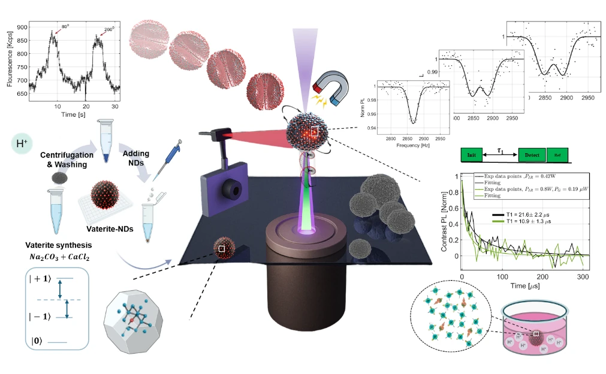

מוצגים 11 מתוך 11
הרצאות
01Virtual Reality as a Research Tool for Value-Based Decision Making
Extended Reality (XR—including Virtual, Augmented, and Mixed Reality) is emerging as a powerful methodological tool for value-based decision-making research. Beyond improving ecological validity, XR allows the collection of rich physiological and behavioral data, such as eye, hand, and facial tracking, and spatial positioning, without disrupting naturalistic experiences. I will show how XR provides new ways to capture multiple physiological signals of decision processes in real time.
In this talk, I will present examples from my lab using VR to study value-based decision making and spatial navigation, illustrating how immersive tasks complement classic behavioral paradigms. I will also share ResXR an open tool for experiment design and analysis, aimed at making immersive methods broadly accessible for advancing behavioral science.
02Flash Floods in Arid and Hyper-Arid Deserts: Hazard and Resource
Flash floods are a defining feature of Israel's deserts, the Negev and the Judean Desert, which together cover most of the country. Like floods in arid and hyper-arid deserts worldwide, they are among the most extreme and least documented hydrological phenomena. Short, intense, localized rainstorms falling on bare rock and thin soils generate runoff within minutes. The floods last only hours but reshape channels and alluvial fans. Their sudden onset, often far from where rain fell, threatens visitors, roads, and settlements. At the same time, floods are a vital source of water, sustaining vegetation and recharging groundwater; in hyper-arid areas, some streams flow only once every few years. Brief, patchy, and often occurring in streams with no measuring stations, such floods are poorly captured by regional monitoring networks and by models developed for humid regions.
The Desert Floods Research Center, part of the Dead Sea and Arava Science Center, addresses this gap through sustained regional presence. Since 2018 we have documented all rain and flood events in southern Israel, monitoring more than 100 stream–road crossings. The record already shows why desert floods are so difficult to study: 6 events in one season and 17 in the next, and anywhere from no flooding streams to dozens in a single event. Field observations are complemented by remote sensing, which extends the record back in time, reaches inaccessible catchments, and helps calibrate hydrological models. We are also developing new ways to measure flows that routinely damage or bypass conventional instruments.
This knowledge translates directly into practice. A flood alert system piloted in Nahal Arugot triggered road closures in all five flood events, with no false alarms, and is now used in additional streams. Our observations show that extreme natural floods can have a more substantial impact on flow distribution and vegetation than man-made infrastructure does. Remote sensing tools developed for flood research have also helped Dead Sea Works detect and monitor a long-standing canal leak. Finally, following completed preparatory studies, this coming season we will begin using floodwater to restore vegetation at springs that dried up because of groundwater over-pumping.
Together, these examples show what place-based science offers for rare, short-lived extreme events. A flood lasting a few hours in a remote catchment is lost to science unless researchers are nearby, prepared, and familiar with the landscape. Sustained regional presence turns such events into data, and data into safer roads and restored ecosystems. Many of these lessons are relevant to drylands worldwide, which cover roughly 40% of Earth's land surface and where rainfall extremes are projected to intensify.
03Artificial Intelligence in the Service of Agriculture: Developing Innovative Solutions for Postharvest Quality Preservation
Postharvest quality deterioration and decay cause substantial losses of fruit and vegetables and economic damage to growers and distributors. Preserving fresh produce often requires combining treatments, which may produce synergistic effects and achieve better results than individual treatments. However, variation in treatment type, concentration, exposure duration, application order and packaging creates a large combinatorial search space that cannot be efficiently explored using conventional experiments.
At the Postharvest Research Innovation Center, an approach combining biological experiments with computational optimization algorithms was developed in collaboration with the research group of Prof. Ofer M. Shir. The search space and constraints are defined using biological knowledge. However, the algorithm does not rely on prior assumptions regarding which combinations should perform best and may therefore propose effective, unconventional solutions. Two complementary strategies were applied. In the iterative approach, the algorithm proposes treatment combinations for experimental evaluation and the results guide the design of the next cycle. This sequential process allows the search to progress based on information obtained in previous cycles. In One-Shot optimization, a diverse set of combinations is selected in advance to provide broad coverage of the search space within a limited experimental budget. This approach is particularly suitable for seasonal crops, for which repeated experimental cycles may not be possible.
Cucumbers were selected as the initial model because of their susceptibility to yellowing, shriveling, softening, chilling injury and decay, as well as their year-round availability. The search space included approximately one million combinations of treatments, application levels, treatment order and packaging types. Algorithmically guided experiments identified promising protocols for preserving cucumber quality. The subsequent transfer and adaptation of knowledge and selected protocols from cucumbers to zucchini were also examined. The methodology was applied to develop storage protocols for bell peppers intended for export from the Arava region, in collaboration with Arava R&D researchers. Three algorithmically guided optimization cycles were followed by semi-commercial evaluation of selected protocols. One-Shot optimization was also applied to lime fruit grown in northern Israel to identify combinations of plant growth regulators, antioxidants and biostimulants capable of delaying peel yellowing. The transfer of knowledge gained from lime to green pomelo was subsequently evaluated. In another application, three-component mixtures of natural volatile compounds were developed to control postharvest decay in citrus, apples and pears. This multi-objective optimization aimed to maximize antifungal efficacy while minimizing volatile concentrations, phytotoxicity and undesirable effects on fruit aroma.
These studies demonstrate how biological experimentation and computational optimization can be integrated to explore complex search spaces and support the development of practical, innovative solutions for diverse postharvest challenges.
04Understanding Grapevine Domestication and Its Evolution in the Land of Israel as a Basis for Developing Climate-Resilient Grapevine Varieties
The southern Levant lies at the arid margin of the grapevine's natural range and was among the earliest centers of viticulture and winemaking. Two related gene pools coexist here. The wild grapevine (Vitis vinifera ssp. sylvestris), progenitor of the cultivated vine, is dioecious and grows in small, isolated riparian populations whose spread at this southern edge of the species' range is limited mainly by water availability and by demographic constraints. The cultivated grapevine (V. vinifera ssp. sativa) is hermaphroditic and clonally propagated, and was selected for larger berries and sugar accumulation. Local winemaking flourished for thousands of years but declined from the 7th century, and the region's ancient cultivars now survive mainly as relict vines on abandoned terraces and near archaeological sites. Both gene pools have been shaped by long exposure to heat and drought, making them a largely untapped resource for viticulture facing climate change. For fifteen years our group has run a systematic national survey to locate and preserve this heritage. We have identified about 85 unique indigenous cultivated genotypes and sampled large wild populations throughout their Israeli distribution, and both are maintained in germplasm collections at Ariel and Neot Kedumim. Molecular genotyping showed that most local varieties are genetically distinct from the European and Caucasian gene pools. To connect living vines with the archaeological record, we developed a three-dimensional seed morphometric tool for variety identification. The collection is characterized for traits central to climate resilience and quality. Accessions are tested for drought tolerance under controlled water deficit and in the field, and for resistance to powdery mildew (Erysiphe necator). Winemaking potential is assessed through micro-vinification and commercial-scale production, and wines from indigenous varieties such as Marawi, Jandali, Yael, Zuriman and Be'er are already on the market. Comparative metabolomic profiling of wild and cultivated vines shows how the accumulation of phenolic and other secondary metabolites changed during domestication, with emphasis on compounds linked to stress tolerance and wine quality. We are now integrating these datasets with genomic resequencing of wild and cultivated accessions, interpreted within the recently proposed model of dual grapevine domestication in Western Asia and the Caucasus. This allows us to identify genomic regions selected during domestication, trace gene flow between local wild and cultivated populations, and link specific loci to drought tolerance, mildew resistance and berry composition. This knowledge underpins a targeted breeding program that combines adaptive alleles from local wild populations with the quality traits of indigenous cultivars, both already adapted to Levantine conditions. The goal is a new generation of varieties, rooted in the region's own genetic history, that can sustain high-quality wine production as the climate becomes warmer and drier.
05שיפור היבול והערך התזונתי בהלופיטים Arthrocaulon macrostachyum ו־Sarcocornia fruticosa באמצעות אופטימיזציה של מרווחי הקציר, מרווחי ההשקיה, רמת המליחות ותזמון האחסון לאחר הקציר
המלחת קרקעות ומחסור במים מתוקים מגבילים את החקלאות. גידול צמחים הלופיטים מציעים פתרון מבטיח לחקלאות תוך שימוש במים מליחים בזכות עמידותם למליחות גבוהה תוך ייצור ביומסה בעלת ערך תזונתי גבוה. Sarcocornia fruticosa והמין הקרוב לה, (AM) Arthrocaulon macrostachyum, מהווים מועמדים אפשריים לחקלאות תוך שימוש במים וקרקע מליחים, ולשיווק התוצרת כירק טרי. עם זאת, היבול, האיכות התזונתית מיד לאחר הקציר ולאחר האיחסון מושפעים במידה רבה משיטות הגידול ומתנאי הסביבה. ברמת הנגב ואזור ים המלח מגדלים מיני סרקוקורניה ליצוא בהכנסה שנתית מעל 50 מליון ₪.
במחקר זה הוערכו השפעות מרווח הקציר, תדירות ההשקיה, רמת המליחות ועיכוב קצר באחסון לאחר הקציר על היבול והאיכות התזונתית של זני סרקוקורניה ו- AM כירק למאכל. אקוטיפים חדשים של Sסרקוקורניה (שיקמונה, מגדים, נעמן ורוחמה) הושוו לאקוטיפ המסחרי VM ולהלופיט בעל דמיון לסרקוקורניה ה־AM. הצמחים גודלו תחת משטרי מליחות שונים עם אספקת חנקן קבועה, והביצועים הוערכו באמצעות מדדי ייצור ביומסה, ומגוון רחב של מדדים ביוכימיים ונוגדי חמצון.
במחקר הראשון גודלו הצמחים ברמות מליחות של 50 ו־150 מילימולר נתרן כלורי ונקצרו במרווחים של 21 או 30 יום במשך 210 ימים. מרווח קציר של 30 יום הגדיל באופן מובהק את היבול, והגביר את רמות המרכיבים המסיסים, המוליכות החשמלית וקיבולת נוגדת חמצון, תוך הפחתת הצטברות מלונ-די-אלדהיד (MDA). האקוטיפים רוחמה ונעמן הניבו ביומסה גבוהה משמעותית בהשוואה לאקוטיפ VM, תוך שמירה על קיבולת נוגדת חמצון דומה. מליחות גבוהה הגבירה צבירת יבול, תכולת מים יחסית התאמה אוסמוטית, כפי שבאה לידי ביטוי בעליית סך הסוכרים המסיסים ובמוליכות חשמלית. AM הציג בדרך כלל את היבול הגבוה ביותר ופרופיל נוגדי חמצון ייחודי תחת מליחות גבוהה ומרווח קטיף ארוך.
במחקר נוסף נבחנו השפעות משולבות של עקת יובש ומליחות באמצעות שינוי תדירות ההשקיה (השקייה כל 2, 6 ו־10 ימים) ורמות המליחות 50, 150) ו־250 מילימולר נתרן כלורי) על היבול והאיכות התזונתית בסרקוקורניה (אקוטיפ מגדים) וב־ .AMהשקיה כל יומיים הניבה את היבול הגבוה בכל רמות המליחות שנבחנו, וכן גרמה לעלייה MDA. הביצועים האופטימליים התקבלו ב־250 מילימולר תחת השקיה כל יומיים, וב־150 מילימולר NaCl תחת השקיה כל 6 ו־10 ימים. הקיבולת נוגדת החמצון התגברה באופן מובהק תחת השקיה כל 6 ימים, ולאחר מכן תחת השקיה כל 10 ימים AM .הצטיין בעקביות בהצטברות גבוהה יותר של קיבולת נוגדת חמצון במיוחד במשטר השקיה מתון (כל 6 ימים).
במחקר השלישי נמצא כי עיכוב באחסון לאחר הקטיף (שעה או שעתיים) שינה באופן מובהק את ההרכב התזונתי. באקוטיפים של סרקוקורניה, עיכוב באחסון העלה את רמות הפוליפנולים, הפלבנואידים, הקרוטנואידים והאנתוציאנינים, והגביר את פעילות נטרול הרדיקלים, ורמת ה-MDA. לעומת זאת, ב־AM נרשמה ירידה במספר נוגדי חמצון לאחר עיכוב האחסון, אף כי רמות נוגדי החמצון הכוללות נותרו גבוהות יותר מסרקוקורניה . עיכוב של שעתיים לפני אחסון בקירור למשך 21 יום הגדיל את הצטברות נוגדי החמצון בסרקוקורניה אך הפחית אותם ב־AM .
לסיכום, הממצאים מדגימים כי ביצועי גידולים הלופיטיים מושפעים באופן מובהק מתדירות הקטיף, משטר ההשקיה, רמת המליחות ואופן הטיפול לאחר הקטיף.
06Varroa mites escape the evolutionary trap of haplodiploidy
Genetic diversity is essential for populations adapting to environmental-changes. Following genetic bottlenecks, invasive species often have reduced diversity, yet must rapidly adapt to novel environments. This paradox is especially pronounced in parasites, which face repeated transmission bottlenecks and anthropogenic countermeasures. The challenge of maintaining diversity in the short-term intensifies in haplodiploid species, where males inherit and transmit only half of their mother’s genome, limiting effective population size. To examine how such species may maintain adaptability, we study inheritance in Varroa mites (Varroa destructor), the globally invasive honey bee parasite. Using three-generation pedigrees, we find that Varroa is not haplodiploid, as previously thought. Rather, females produce diploid clone sons who transmit either copy of their mother’s genome to daughters. This system slows reduced heterozygosity loss under sib-mating, compared to ancestral haplodiploidy, increasing effective population size and adaptability. Our findings reveal a rare reversion from haplodiploidy, long considered an evolutionary end state, and suggest reproductive plasticity underlies the resilience of invasive parasites like Varroa.
07Algae4IBD: Turning Algal Biodiversity into Validated Solutions for IBD
Inflammatory bowel diseases (IBD), including Crohn’s disease and ulcerative colitis, are chronic disorders for which current therapeutic approaches are effective only in part of the patient population and may be associated with loss of response, adverse effects and a continuing need for complementary preventive and supportive strategies. At the same time, marine and freshwater algae represent an exceptionally diverse and still underexplored source of biologically active molecules.
Algae4IBD, an EU Horizon 2020 project bringing together 21 partners from research, clinical and industrial sectors, was established to explore this biodiversity systematically and translate it into new opportunities for IBD prevention, management and future product development.
The project evaluated more than 150 micro- and macroalgal strains and generated over 600 extracts and fractions. These were investigated through complementary screening platforms addressing key processes relevant to intestinal inflammation, including inflammatory signalling, oxidative stress, cyclooxygenase and monoacylglycerol lipase pathways, antimicrobial activity, prebiotic potential and toxicity. Promising candidates were progressively advanced from in vitro screening to intestinal epithelial models, patient-derived ex vivo systems and experimental models of acute and chronic intestinal inflammation.
This integrated strategy enabled the identification of several algal preparations with reproducible biological activity across complementary platforms. Alongside biological validation, Algae4IBD addressed the translational challenges required to move promising candidates beyond discovery. These included cultivation and strain improvement, extraction and scale-up, simulated gastrointestinal digestion, formulation and encapsulation, assessment of stability and development of food and supplement prototypes. Twenty-nine food prototypes were generated during the project, illustrating the potential to bridge biological discovery with practical routes toward application.
The project therefore created not only a collection of active algal candidates, but an integrated pipeline linking biodiversity, biological screening, mechanism-oriented research, formulation, production and commercial translation.
The presentation will highlight the Algae4IBD discovery-to-translation journey, selected biological findings and lessons learned from combining algal biotechnology, IBD biology and product development. It will also discuss how the project’s results provide a foundation for the next generation of evidence-driven algae-based solutions for intestinal health.
08Valorization of Olive Mill Wastewater and Willow (Salix spp.) for the Development of Sun-Protective Formulations with Antioxidant Activity
Olive mill wastewater (OMW), a major by-product of the olive oil industry, is rich in bioactive polyphenols with antioxidant and antimicrobial properties, despite its environmental burden. Willow (Salix spp.) likewise contains diverse bioactive compounds, including salicin and other antioxidant and anti-inflammatory constituents. Given the susceptibility of human skin to UV-induced damage and concerns associated with some synthetic sunscreen agents, natural UV-protective alternatives are increasingly of interest. This study evaluated polyphenolic extracts from OMW and willow as potential natural UV-protective agents, focusing on Sun Protection Factor (SPF), critical wavelength (CW), and antioxidant activity, while linking environmental valorization with skin-protective applications. OMW from the Souri and Barnea olive cultivars was processed into an antisolvent (AS) fraction. Enriched fractions were subsequently obtained by solvent extraction of varying polarity using Fractionation Guided Assay (FGA) and by selective extraction with synthetic resins (XAD16N and XAD7HP). In parallel, extracts were prepared from three willow phenotypes. Fractions were characterized for total phenolics (TP), total sugars (TS), total flavonoids (TF), salicylic acid (SA), and phenolic profiles by HPLC. UV-protective activity was assessed spectrophotometrically using SPF (Mansur equation) and CW, while antioxidant capacity was evaluated by DPPH, ABTS, and FRAP assays. Extraction method strongly influenced fraction composition and functional properties. EtOAc-derived fractions showed high UVB protection but limited UVA coverage (CW < 370 nm). In contrast, resin-based fractions obtained with XAD16N, XAD7HP, and their combined eluents maintained high SPF values and achieved CW > 370 nm, indicating broad-spectrum UVA/UVB protection. This improved performance may result from the ability of the resins to recover both free phenolics and phenolic glycosides, which contribute to UVA absorption. Willow leaf extracts contained high levels of phenolics, flavonoids, and salicylic acid and exhibited high SPF values (≈32.6) with suitable CW values. Purified EtOAc and mixed-eluent fractions demonstrated substantially stronger antioxidant activity than the crude AS fraction, as shown by lower EC50/IC50 values in DPPH and ABTS assays and higher FRAP values. Overall, the findings demonstrate that bioactive polyphenolic fractions with promising potential for natural cosmetic applications can be derived from OMW and willow leaves. XAD resin extraction was particularly effective, providing an optimal combination of high SPF, broad UVA/UVB protection, and strong antioxidant activity, while contributing to the reduction of OMW organic load and supporting its valorization as a valuable source of natural cosmetic ingredients.
09Birefringent Spherulite Optomechanics for Dual Quantum pH and Magnetic Bio-Sensing
A birefringent vaterite–nanodiamond hybrid enables orientation-locked optical trapping and robust quantum sensing in liquids. Stable ODMR (2–8 %), single-exponential ≈ 60 μs, and threefold shortening for ΔpH ≈ 0.3 reveal proton-driven dielectric-gate coupling, establishing a compact, biocompatible platform for optomechanical and chemical quantum sensing in physiological media.

Nitrogen-vacancy (NV) centers in diamond enable atomic-scale sensing but lose coherence in liquids due to random rotation and weak spin-environment coupling. We realize a birefringent vaterite-nanodiamond (ND) hybrid, where optical anisotropy locks NV orientation under 976 nm circularly polarized trapping, aligning the NV axis to the beam polarization and suppressing diffusion. The system sustains ODMR contrasts of with spectral drift up to 0.8 W and under continuous-wave operation. The negatively charged carbonate-PSS interface () focuses protons and shifts the effective by units, enhancing interfacial magnetic noise at the NV transition (). The measured threefold shortening from for corresponds to for . Control experiments in D2O and ethanol confirm that the relaxation originates from proton mobility and dielectric-gate transmission, not optical heating.
The relaxation follows
where is the proton-site occupancy, combines diffusion and exchange, and represents the dielectric gate. In water-like media () (open gate), whereas in ethanol (closed gate), explaining the weak response observed experimentally. Finite-difference time-domain simulations show that surface -dipoles form directional photonic nanojets with a Purcell enhancement along the optical axis, matching the PL modulation measured in D2O under polarization rotation. The vaterite microsphere thus acts simultaneously as optical trap, micro-lens, and proton-amplifying scaffold, achieving single-exponential relaxation () and stable operation in physiological media. This optically trapped quantum metamaterial merges optomechanical alignment, Purcell-enhanced emission, and GHz-band chemical-noise transduction-providing a mobile, biocompatible sensor for realtime pH and magnetic-field mapping in complex biological environments.
References
10Shamir Research Institute – Science, Innovation, and Impact from the Golan to the World40+ years · 100+ employees · ≈25 researchers · ≈50 graduate students · Labs and research infrastructure across an implementation farm and the field
Shamir Research Institute has operated for over 40 years in Katzrin, in the Golan Heights, as a leading center for applied research, innovation, and regional development, supported by the Ministry of Innovation, Science & Technology, the Golan Regional Council, and the University of Haifa. Its work spans the life and environmental sciences (ecology, agroecology, genetics, agronomy, plant pathology, soil and water) and the social sciences (education, community, policy, planning).
Beyond academic research, the Institute leads regional projects linking science to the field and community. TURA Developments Ltd., the Institute's commercialization arm, has founded several companies, a regional investment fund, and innovation centers. The Agriculture and Innovation Unit supports Golan farmers in developing new crops and advanced technologies. The HTI technology branch in Majdal Shams combines STEM education with applied research for the community, while an agricultural and educational research and implementation farm serves the Golan community. The Education R&D unit is a research, evaluation, and measurement unit supporting educational institutions and other bodies with data-driven insights for program improvement and growth.
The GIS, Artificial Intelligence, and Remote Sensing Unit runs regional ecological, agricultural, and environmental projects combining mapping, monitoring, and spatial analysis for field-level decisions. The Institute also hosts the National Mushroom Center, established with support from the Israel Innovation Authority, supporting collection, research, and a new industry, alongside the Golan and Galilee Ecological Restoration Center, operated in partnership with the Golan Regional Council, the Jewish National Fund (KKL), and the Ministry of Environmental Protection, restoring open landscapes.
Across Katzrin, Majdal Shams, and the Golan, Shamir Research Institute shows how place-based research can drive agricultural and environmental innovation, science education, and lasting development in Israel's north.
11PITRIOT, The National Center for Mycology: Research and Development Infrastructure for Fungal Innovation
Fungi represent a versatile biological platform with broad applications in food, agriculture, biotechnology, advanced materials, and environmental sustainability. Their ability to produce biomass, enzymes, and bioactive metabolites, grow on diverse substrates, and degrade complex organic matter enables the development of alternative proteins, biocontrol solutions, mycelium-based materials, functional ingredients, and circular bioeconomy technologies. Despite strong scientific expertise in Israel, dedicated infrastructure integrating knowledge, technological capabilities, and scale-up remains limited.
PITRIOT, the National Center for Mycology, was established at the Shamir Research Institute in the Golan Heights with the support of the Israel Innovation Authority to bridge the gap between research and industrial application. The Center is developing a holistic R&D infrastructure comprises a national fungal strain collection; isolation, characterization, screening, and selection of strains with application potential; solid-state and submerged fermentation (SSF/SmF); process optimization; advanced analytics; downstream processing; and regulatory guidance. This integrated platform supports researchers, entrepreneurs, and companies throughout the development pathway, from strain and laboratory POC to scalable processes and products.
Beyond R&D, PITRIOT promotes education, public engagement, and regional capacity building by exposing diverse audiences to the scientific, technological, and creative potential of fungi. Through educational initiatives and community partnerships, the Center aims to foster scientific curiosity, encourage innovation, and strengthen the connection between research, technology, and the local community.
By integrating research, infrastructure, industry, education, and regional partnerships, PITRIOT aims to position northern Israel as a leading hub for fungal research, innovation, cultivation, and biotechnology.
פוסטרים
01Irrigation Management in Deciduous Orchards in the Southern and Central Golan Heights Using Soil and Plant Sensors: Comparison with Stem Water Potential
Efficient irrigation management in deciduous orchards is particularly challenging under the variable soil and climatic conditions of the Golan Heights. Current irrigation practices commonly rely on crop coefficients (Kc) and reference evapotranspiration (ET₀), while stem water potential (SWP) provides a direct measure of tree water status but requires labor-intensive measurements. Continuous soil and plant sensors may provide a practical alternative for real-time irrigation management; however, their response and reliability under field conditions must be evaluated.
This study evaluated soil- and plant-based sensors as indicators for irrigation management in a nectarine orchard in the southern and central Golan Heights, using SWP as a reference. Six trees were subjected to repeated drying and rewetting cycles by temporarily withholding irrigation, enabling the evaluation of sensor responses across a range of tree water status. Relationships between sensor measurements and SWP were used to identify sensor-specific irrigation thresholds. The remaining orchard trees were managed using regulated deficit irrigation (RDI), with irrigation amounts adjusted weekly according to SWP thresholds: approximately −0.9 MPa during Stages I and III and moderate water stress during Stage II (SWP ≈ −1.5 MPa).
Tensiometer-derived soil matric potential provided useful information during Stages I and III, although under deficit irrigation measurements at 30 cm exceeded the sensors’ operating range. Soil water content sensors responded more slowly to changes in irrigation and tree water status. Dendrometers responded rapidly and showed potential for irrigation management, but were strongly affected by atmospheric conditions.
The results demonstrate that no single sensor provides a universal indicator of tree water status. Effective sensor-based irrigation management requires sensor-specific thresholds and consideration of soil, phenological, and atmospheric conditions. These findings provide a field-based framework for adapting precision irrigation technologies to the conditions of deciduous orchards in the Golan Heights.
02Place-Based Management of Barn Owl Nest-Box Networks in the Hula Valley: RFID Reveals Density-Dependent Nest Switching and Reduced Fledging Success
Barn owls (Tyto alba) are widely used as biological control agents against rodents in agricultural landscapes, and nest-box supplementation has become an important management tool in Israel. However, increasing nest-box density may also create unintended ecological effects. We examined this issue in the Hula Valley, northern Israel, a region with a long-established barn owl nest-box network embedded within an intensively managed agricultural landscape.
We monitored 145 nest boxes and used continuous radio-frequency identification (RFID) systems at 50 active nests. In total, we fitted 464 nestlings and 108 adults with PIT tags, producing more than 1.2 million detections. We tested whether high local breeding density increased nest switching by fledglings and whether this behavior was associated with reduced breeding success in host nests.
Nest switching was common: 12.9% of tagged fledglings visited foreign nests, and 54% of RFID-monitored nests were visited by at least one switcher. Nest-switching rate increased with the number of active fledgling nests within 500 m and decreased with host brood age. Although the number of fledglings produced per nest was not associated with nest-switching rate, fledging success declined as switching increased.
These findings demonstrate how local management practices can generate density-dependent interactions that are difficult to detect using conventional nest monitoring. In the Hula Valley, maximizing nest-box density may therefore have unintended costs. Place-based management should consider nest-box spacing, local breeding density, and individual-level measures of reproductive success when evaluating and adapting barn owl-based biological control programs.
03Agrivoltaics in the Golan Heights: Optimizing Agricultural Productivity and Renewable Energy Generation through Regionally -Based Research
The transition to renewable energy presents a major land-use challenge, particularly in regions where agricultural production is essential for local economies and food security. The Golan Heights, characterized by diverse topography, climatic gradients, and intensive agricultural activity, provide a unique setting for developing and evaluating innovative dual-use land systems. This study examines the feasibility of integrating photovoltaic infrastructure within commercial field-crop production systems while maintaining agricultural productivity and resource-use efficiency.
The research is conducted at the Aveni Eitan experimental farm in the Southern Golan Heights as part of a regional R&D initiative focused on sustainable agriculture and climate adaptation. The study evaluates a dynamic agrivoltaic system in which solar panels can be adjusted to regulate shading levels throughout the day and growing season. The system design: 1. Plot size under panel vs. plot size in control; 2. Number of growing beds. Field experiments compare leafy vegetables grown in NGS hydroponic system under different shading regimes with conventional open-field controls while simultaneously monitoring crop performance, microclimatic conditions)Temperature, wind, humidity, total radiation and photosynthetically active radiation (PAR)) , water use, nutrient dynamics, plant health, pest and disease incidence, pollinator activity, and energy production.
The project addresses critical regional challenges, including increasing climate variability, pressure on agricultural profitability, efficient use of land resources, and the growing demand for renewable energy. By combining continuous environmental monitoring with agronomic and economic assessments, the research aims to identify management strategies that maximize the combined value of agricultural production and solar electricity generation.
Expected outcomes include the development of practical guidelines for agrivoltaic implementation under Mediterranean conditions, improved understanding of crop responses to controlled shading, and decision-support tools for farmers, planners, and policymakers. The study demonstrates how place-based research conducted within the regional R&D framework can generate locally relevant solutions with broader implications for sustainable agriculture, rural resilience, and the energy transition.
04Resistance to fungicides in Apple Powdery Mildew: Insights and Eco-Friendly Alternatives
Apple powdery mildew, caused by Podosphaera leucotricha, is a major threat to apple production worldwide, affecting leaves, flowers, and young fruits. Disease management primarily relies on chemical fungicides, including demethylation inhibitors (DMIs) and respiration inhibitors such as SDHIs and QoIs. Reduced fungicide efficacy has been documented worldwide. The intensive use of fungicides increases the risk of resistance development, even though no mutant P. leucotricha isolates have been confirmed to date. Israel's climate, characterized by occasionally rainy springs and dry summers, promotes powdery mildew development and necessitates frequent fungicide applications. This study examines the occurrence of P. leucotricha resistance to fungicides using field trials, laboratory experiments, and genetic analyses. Trials conducted in apple orchards in the Golan Heights revealed low efficacy (20–30%) for penconazole (DMI) and kresoxim-methyl (QoI) compared to the higher efficacy of trifloxystrobin (QoI). Laboratory bioassays involving leaf discs and isolates collected from infected leaves in the field showed EC90 values of 30 and 75 ppm for penconazole and kresoxim-methyl, respectively, both close to the recommended field application rates. Trifloxystrobin, however, exhibited EC90 values below 2.1 ppm. Genetic analyses did not detect mutations associated with DMI or QoI resistance, suggesting alternative resistance mechanisms. To reduce the use of fungicides, we examined the efficacy of fertilizers containing macro- and micronutrients. Greenhouse trials showed a 94–97% reduction in disease incidence, while orchard trials demonstrated 77–83% efficacy in reducing severity. This study provides the first insights into P. leucotricha resistance in Israel and highlights eco-friendly alternatives to conventional fungicides.
05Interaction between the honey bee parasite Varroa destructor mite and the honey bee viruses
Honeybees (Apis mellifera) are essential pollinators for diverse crops and play a critical role in global agriculture and ecosystem biodiversity. However, the parasitic mite Varroa destructor poses a major threat to honeybee colonies worldwide, largely through its role in the transmission and amplification of viruses such as deformed wing virus (DWV). Increasing evidence indicates that honeybee-associated viruses can alter gene expression in Varroa, and that some viruses can replicate within the mite, suggesting complex interactions between viruses and their vector. However, the molecular mechanisms underlying these interactions and their consequences for Varroa biology remain poorly understood.
In the current research we aim to investigate how DWV-A affects Varroa gene expression, behavior, reproduction, and virus transmission. To examine the molecular response to DWV-A, we performed targeted viral silencing using double-stranded RNA (dsRNA), followed by RNA sequencing of Varroa mites. More than 50 Varroa genes showed reduced expression following DWV-A silencing. These genes were primarily associated with metabolic processes and chitin and cuticle formation, suggesting that DWV-A may influence fundamental physiological processes in the mite.
The observed transcriptional changes likely represent only part of the Varroa response to DWV-A. Importantly, the experimental window is currently limited to 24 hours, as longer periods following dsRNA treatment result in increased Varroa mortality, preventing reliable analysis of later transcriptional responses. Thus, the current approach is constrained to a 24-hour window and may primarily capture early transcriptional responses to reduced viral activity, while later or indirect effects may remain undetected. We therefore hypothesize that DWV-A affects a broader network of Varroa genes than identified in the current experiment. These findings provide initial evidence for a molecular interaction between DWV-A and its Varroa host and establish a foundation for investigating how viral activity influences mite physiology and, ultimately, its behavior, reproduction, and capacity to transmit viruses.
06Characterizing Heat Tolerance in Plasmopara viticola, the Causal Agent of Grapevine Downy Mildew, and the Factors Driving Summer Epidemics
Grapevine downy mildew, caused by the obligate biotrophic fungus-like oomycete Plasmopara viticola, poses a severe threat to viticulture in Israel and worldwide. This grapevine-specific pathogen strictly requires free water on the leaf surface for its swimming zoospores to migrate, locate stomata, and penetrate host tissue. Moreover, temperatures above 35°C are generally considered unfavorable for the survival and development of P. viticola. Yet, severe summer epidemics are repeatedly observed in Israeli vineyards during the hot and dry season, despite frequent temperatures above this threshold and the virtual absence of rainfall.
This study investigated the mechanisms underlying summer survival and heat stress tolerance. Field isolates from diverse microclimates (coastal plains, Golan Heights, and wild grapevines) were evaluated under controlled stress and simulated diurnal heatwaves (peaking at 38°C). Zoospore assays revealed that while temperatures of 29°C and 31°C completely inhibited motility, they were not lethal; zoospores exhibited temporary, reversible motility inhibition, rapidly resuming active swimming upon returning to 20°C. Direct heat stress (38°C) completely suppressed external sporulation, yet microscopic analysis revealed active, latent internal colonization within the leaf mesophyll across diverse isolates. Upon returning to optimal temperatures, the pathogen demonstrated remarkable recovery and aggressive sporulation, with commercial vineyard isolates exhibiting significantly higher recovery rates compared to wild isolates. Ontogenetic resistance trials using both vineyard and greenhouse leaves showed a consistent, uniform trend across all isolates, where young leaves exhibited high susceptibility and mature leaves developed strong natural resistance. Ongoing experiments are characterizing the minimal leaf wetness duration and temperature thresholds required for sporangial release and infection. In parallel, multi-year spatial data on disease development across diverse grape-growing regions in Israel will be integrated. This integrated approach provides the foundation for developing a Decision Support System (DSS) to optimize fungicide application timing, effectively managing summer epidemics while reducing unnecessary chemical inputs
07Evaluation of Natural Compounds for Selective Control of Varroa destructor in Honey Bees
The parasitic mite Varroa destructor is a major threat to honey bee (Apis mellifera) health. Current control methods rely mainly on synthetic acaricides, but repeated use can promote resistance and reduce treatment efficacy. Moreover, because both mites and bees are arthropods, achieving selective toxicity against the mite while minimizing harm to the bee remains a significant challenge.
We evaluate naturally derived compounds selected through bioinformatic screening comparing metabolic pathways of V. destructor and A. mellifera, aiming to exploit metabolic differences between the two species. We assess their efficacy in reducingmite viability, safety for honey bees, and potential mechanisms of action. Immediate effects on Varroa mite are evaluated by exposing adult mites to different doses in glass vials for three hours, with thymol, natural compound with known advers effect on Varroa, as a positive control. To assess delayed effects, surviving mites are transferred to parasitize honey bee pupa for additional three days. Potential Varroa-active compounds will also be tested for toxicity to adult bees, and will undergo transcriptomic analysis to identify changes in gene expression and associated biological pathways in both Varroa and honey bees.
Preliminary experiments showed that one natural compound caused a significant dose-dependent decrease in mite viability after three hours (P < 0.001), with a VD₅₀ of 3.63 µg/vial, 15 times more toxic then thymol positive control (45.36 µg/vial). After additional three days post exposure, mite viability decreased to 16.7% of initial viability, similar to tyhmol. These results indicate acaricidal activity and a possible prolonged effect, supporting further evaluation of naturally derived compounds for selective control of V. destructor.
08Structural Genomic Characterization of the Core Psilocybin Biosynthetic Genes in Psilocybe cubensis
Psilocybin biosynthesis in Psilocybe cubensis is mediated by a compact gene cluster encoding four core enzymes: PsiD, PsiH, PsiK, and PsiM. Although this pathway has attracted considerable scientific interest, the structural organization of its core genes remains inconsistently represented across genomic databases, limiting accurate interpretation and comparative analysis of this biosynthetic system.
Here, we established a unified structural genomic framework for the four-core psilocybin biosynthetic genes. Experimentally derived mRNA sequences were mapped to the current chromosome 10 reference sequence (NC_063008.1), and the reconstructed gene models were systematically compared with RefSeq, NCBI Gene, and UniProt annotations. This approach enabled precise determination of gene boundaries, transcriptional orientation, and exon-intron architecture. The analysis revealed markedly different genomic structures among the four genes: psiK comprises 2 coding exons, psiD 3, psiH 11, and psiM 12. For psiK, genomic sequencing across the locus in selected P. cubensis lines provided experimental support for the reconstructed genomic structure.
Together, these results resolve key inconsistencies in the annotation of the core psilocybin biosynthetic region and provide a coherent structural reference for this pathway. Establishing accurate gene architecture is an essential prerequisite for investigating how genetic and regulatory variation may contribute to differences in psilocybin biosynthesis among P. cubensis lines.
The resulting framework therefore provides a foundation for the next stage of our research: comparative characterization of regulatory regions associated with variation in psilocybin production.
09Surprising Variability in Tryptamine Profiles of Psilocybe cubensis Fruiting Bodies: Inter- and Intra-Strain Differences Across 14 Strains Cultivated Under Controlled Conditions
Psilocybin-producing mushrooms exhibit considerable biochemical diversity, yet the extent of variability among strains within a single species under standardized conditions remains insufficiently characterized. In this study, we quantified psilocybin, psilocin, baeocystin, norbaeocystin, aeruginascin, and norpsilocin in the fruiting bodies of 14 distinct strains of Psilocybe cubensis. The mushroom strains were cultivated, dried, extracted, and analyzed under uniform laboratory conditions. Despite strict methodological standardization, total tryptamine concentrations varied by more than 7.8 fold among strains (from 2.62 to 20.65 mg/g), with psilocybin consistently emerging as the dominant compound. Analysis of individual fruiting bodies within the selected strains revealed substantial intra-strain variability, with coefficients of variation for psilocybin ranging from 12.81% to 23.39 % between individual fruiting bodies. These findings demonstrate that both inter- and intra-strain biochemical heterogeneity persist even under controlled conditions, underscoring the challenges of standardizing whole mushroom preparations for research or therapeutic use. Our results highlight the importance of strain selection, rigorous chemical profiling, and dosing precision in future pharmacological and clinical applications of P. cubensis.
10Amitraz Sensitivity and Resistance Mechanisms in Israeli Varroa destructor Populations
The honey bee (Apis mellifera) is the main managed agricultural pollinator. A key threat to this essential service is the parasitic mite Varroa destructor, which weakens colonies through feeding on the bees and transmission of pathogenic viruses, causing rapid colony decline. Commercial beekeeping in Israel relies heavily on miticides to protect colony health and pollination services. Resistance has reduced the efficacy of pyrethroid and organophosphate treatments, leaving amitraz, a formamidine pesticide, as the main broadly effective synthetic treatment in commercial apiaries. Reduced amitraz efficacy has been reported from beekeepers in several countries, including Israel, raising concern about resistance. In Israel, quantitative data on amitraz sensitivity have been lacking, and reduced efficacy is usually identified only after treatment failure. The genetic basis of amitraz resistance has not been systematically investigated, and no validated tool is available for routine resistance monitoring and treatment decisions.
We standardized laboratory and field protocols to assess Varroa sensitivity to amitraz. A nationwide survey conducted from 2024 to 2026 revealed substantial variation in sensitivity, including reduced efficacy in several regions and among colonies within individual apiaries. Highly sensitive populations from northern Israel were used to establish a laboratory dose response curve and determine a diagnostic dose for rapid resistance detection. The sampled populations also provide the basis for the first systematic study of genetic mechanisms associated with resistance to amitraz and other miticides in Israel. Integrating phenotypic sensitivity data with genetic analyses will enable identification of resistance associated markers and evaluation of alternative treatment options with different modes of action.
These results provide the first nationwide dataset on amitraz sensitivity in Israeli Varroa populations and establish a foundation for resistance monitoring and evidence based management, supporting honey bee health, pollination, agricultural productivity, and food security.
11Developing a Conceptual and Practical Approach to Light Management in Desert Agrivoltaic Systems Across Crops
This research develops a unified framework for managing light and shade in desert agrivoltaic systems, based on studies of lettuce, potato, and wine grape. The objective is to optimize the agricultural and energy components jointly, creating a system whose combined economic value exceeds that achievable by either component alone. The principal challenge is to understand how the quantity, timing, and spatial distribution of light affect crop carbon gain, development, yield, quality, and microclimate.
The framework comprises three layers. First, a crop-specific carbon-balance model integrates photosynthesis, respiration, biomass allocation, phenology, and radiation and temperature effects. A multiyear archive of 10-minute meteorological observations from Ramat Negev is used to simulate numerous planting dates and growing cycles. These simulations identify seasonal light and temperature constraints, the daily light integral required for adequate relative growth, and periods when excessive radiation or heat makes shading beneficial.
The crop-specific trade-offs differ. In lettuce, the model follows dry-matter accumulation toward a marketable target while identifying heat- and carbon-limited periods. In potato, it balances light requirements during establishment and tuber production against cooling benefits during tuber initiation and bulking. In wine grape, it considers canopy exposure, leaf temperature, VPD, photosynthetic efficiency, phenology, ripening, and fruit and wine quality.
Second, optimal dynamic-shading strategies are derived retrospectively and validated against independent historical seasons. Third, these insights are translated into a causal, real-time controller combining historical expectations with live radiation, air-temperature, and plant-temperature measurements. Each shading decision will weigh both the immediate and cumulative agricultural consequences and its effect on instantaneous and daily electricity generation. The controller will therefore optimize the combined agronomic and energetic value of the system, providing a transferable basis for adaptive management across crops, seasons, and increasingly variable desert climates.
12From Agricultural Waste to Regional Resource: The Negev Waste-To-Resource Innovation Living Lab
The Negev is a large agricultural desert region where greenhouse residues, pruning waste, agricultural plastics, municipal green waste and other biomass streams create a growing environmental, operational and economic challenge. In response, the Negev regional R&D stations are leading the establishment of the Waste-To-Resource Innovation Living Lab, a place-based regional platform designed to transform locally generated waste from an environmental burden into a valuable resource.
The Living Lab goes beyond a conventional research project. Led by the Negev regional R&D stations in partnership with Ben-Gurion University of the Negev, it brings together farmers, regional authorities, researchers, industry partners and technology providers to develop, demonstrate and implement practical waste-management solutions under real desert conditions. The platform integrates complementary pathways including pyrolysis, gasification, composting and biological treatment, with the aim of matching different waste streams to the most appropriate recovery pathway rather than relying on a single technological solution.
The Living Lab connects regional R&D stations through shared protocols, data, technology validation and knowledge exchange. Activities will include waste characterization, technology testing, material recovery, shared data collection, stakeholder workshops, professional training and demonstration activities for farmers, municipalities, startups, researchers and government agencies.
The expected regional impact is practical and long-term: reducing uncontrolled burning and landfilling, recovering valuable resources such as biochar, compost, feed and energy, strengthening collaboration across agriculture, local government, academia and industry, and creating a replicable model for circular resource management in rural and arid regions. Through this initiative, the Negev regional R&D stations serve not only as research centers, but as a shared implementation platform connecting local challenges, technologies and stakeholders to create practical environmental and agricultural solutions.
13Robotics, Automation, and Climate Control for Sustainable Tomato Production Under Extreme Desert Conditions: The “Greenhouse of the Future” Pilot
The Israeli tomato sector faces growing labor shortages, intensified since October 2023, together with yield losses caused by increasingly extreme climatic conditions. The Negev region, home to more than 30,000 dunams of tomato greenhouses, is particularly affected by these dual challenges. The “Greenhouse of the Future” pilot at the RNDARC is a three-year place-based study evaluating whether advanced climate control, automation, and robotics can improve productivity while reducing labor requirements in desert tomato production.
During the first year, two control cultivars and five additional tomato cultivars were evaluated in an actively climate-controlled greenhouse. Plants were grown in coconut-coir bags on elevated drainage gutters under an integrated system including motorized thermal and shading screens, dehumidifiers, chillers, CO₂ enrichment, wet-pad cooling, and circulation and exhaust fans. Robotic technologies included continuous Arugga pollination, alongside field testing of a MetoMotion harvesting robot, an Arugga plant-lowering robot, and a robotic sprayer. Twenty-six sensors linked to three monitoring platforms provided continuous data on greenhouse climate and plant development.
As of 7 September 2026, after 17 harvests since 5 May, cumulative yield across the tested cultivars ranged from approximately 32 to more than 55 tons per dunam, while maintaining high fruit quality. These yields were roughly three times the average yield of conventional greenhouses in the region.
The project will integrate agronomic, climatic, automation, and economic data into both grower-oriented and scientific outputs. Beyond evaluating technical and economic feasibility, it aims to demonstrate locally adapted alternatives for tomato production under the extreme climatic conditions of Ramat Negev and to establish the site as a model for advanced desert agriculture in Israel and internationally.
14Leaf-Temperature-Based Evaporative Cooling for Summer Tomato Production in the Negev
Summer tomato production in the Ramat Negev region is characterized by high daytime temperatures, low relative humidity and high radiation loads. During 2023–2025, we evaluated a low-pressure evaporative cooling system for tomato production in a net-house under these conditions. Evaporative cooling reduced daily maximum air temperature by approximately 1–3°C and significantly reduced leaf temperature during the hottest hours of the day, with reductions reaching approximately 4°C. Cooling also improved several physiological and fruit-quality parameters, although no significant increase in total yield was observed.
These findings demonstrated the ability of evaporative cooling to modify the plant microclimate, but also raised a practical question: What is the optimal cooling regime
and which parameters should determine its activation?
A new experiment is therefore focusing on optimizing evaporative cooling combined with air circulation under Ramat Negev conditions. Two operating strategies, based on short and long cooling pulses, are being compared. Continuous measurements of canopy and air temperature, relative humidity and vapor pressure deficit are used to characterize plant response to each regime.
The objective is to move from fixed-time cooling toward a precision-control approach in which cooling is activated according to plant temperature. Ultimately, the study aims to identify an effective canopy-temperature threshold and cooling regime that minimize heat stress while reducing unnecessary water use.
15From Plants to Insects: Horizontally Transferred Phenylpropanoid - Biosynthesis Genes and Stress Resilience in Bemisia tabaci
Flavonoids play a critical role in plant survival and adaptation by attracting pollinators, mitigating oxidative damage, regulating developmental processes, and defending against stresses such as UV radiation, pathogens, drought, and heat. These compounds are synthesised via the phenylpropanoid pathway, initiated by the conversion of phenylalanine to cinnamic acid by phenylalanine ammonia-lyase (PAL). Another key enzyme, chalcone synthase (CHS), catalyses the formation of naringenin chalcone, the precursor of flavonoids. In animals, flavonoids are known for their beneficial health effects, including antioxidant, antimicrobial, and stress-reducing properties. However, these effects were previously attributed solely to dietary intake.
Here, we report the first evidence that an animal genome encodes core enzymes of the flavonoid biosynthesis pathway. We discovered that the phloem-feeding whitefly Bemisia tabaci acquired two PAL genes (BtPALs) and one CHS gene (BtCHS4) from plants via horizontal gene transfer (HGT). Transcriptomic analyses confirm expression of these genes throughout the insect’s life cycle, and metabolomic profiling detected flavonoid-related signatures compatible with endogenous production. Functionally, RNAi-mediated silencing of BtCHS4 significantly increased adult susceptibility to UVB radiation – a critical environmental challenge B. tabaci faces, particularly during its sessile nymphal stages – indicating that this horizontally acquired pathway is involved in a novel chemical defence strategy in a phloem-feeding insect, thereby contributing to stress tolerance.
These findings reveal an unusual metabolic adaptation in which plant-derived genes contribute to an herbivorous insect's ability to cope with environmental stress. Beyond redefining the known boundaries of animal metabolism, this discovery exposes sequence-specific, highly selective targets for RNAi-based pest management, as this pathway is absent in pollinators and beneficial natural enemies. Targeting these genes reduces whitefly resilience to field stresses such as UVB radiation, providing a sustainable complementary approach for controlling B. tabaci, including populations resistant to conventional insecticides.
16Place-Based Science in Action: The Gaza Envelope Regional Plant Pathology Laboratory
Following the closure of the "MA'AMATZ Negev" facility in Gilat, the Gaza Envelope R&D Center expanded its operations by establishing a dedicated plant pathology laboratory to restore essential diagnostic, identification, and consulting services for Negev and Gaza Envelope farmers. Grounded in the concept of "Place-Based Science," this initiative aligns scientific infrastructure and applied research directly with local field requirements and grower challenges.
The plant pathology unit integrates seamlessly into the center’s existing framework alongside its analytical laboratory, which provides pesticide residue testing and analytical research for regional growers, logistics centers, and industry. Combining diagnostic analytics with R&D led by researchers delivers actionable, cross-disciplinary insights into plant and soil health.
Central to this initiative is the creation of a regional data infrastructure built on cumulative diagnostic and testing results. Over time, this database will track spatial and temporal patterns—including disease outbreaks, pesticide residue trends, geographic variations, and crop-specific variables. The resulting repository will support future research, monitoring, and data-driven decision-making tools for regional stakeholders.
By uniting pathology diagnostics, analytical testing, continuous data logging, applied research, and expert consultation, the center advances beyond isolated lab services to form an integrated regional support system. Ultimately, this framework strengthens connections between academia, research, and growers, reinforcing resilient and sustainable agriculture across the Negev and Gaza Envelope.
17Developing a combination of biostimulant bacteria and unique chemoattractant to substantially reduce usage of chemical fertilizers and pesticides for sustainable modern agriculture
Background: In the Sharon valley over 200 wells supplying drinking water were disqualified for human consumption and closed due to over-pumping, over-fertilization regimes, and massive pollution resulting from agricultural activities (pesticides, nitrates). The wasteful use of fertilizers reduces the farmers’ profits, increases the carbon footprint, and contributes to depletion in natural minerals reserves in Israel. We develop a new concept and technology that dramatically reduces chemical fertilizers utilization, costing less, and supporting sustainable agriculture.
Innovation and Originality: The new concept is based on employing plant beneficial bacteria (PBB), a well-proven under-exploited technology, combined with a newly discovered bacterial chemoattractant secreted from plant roots. 1. We isolated exceptionally potent chemoattractants-nucleosides, which are active at very low concentrations (M versus mM) these serve as a specific signal rather than nutrition and therefore are stable in the soil. The nucleosides are secreted from roots and dramatically increase the attraction of natural occurring PBB to the roots zone. 2. Two isolated bacilli strains act synergistically and support plant development and protection. The bacilli are extremely tolerant of high temperatures (500C) and produce spores which facilitate manufacturing stable products with very long shelf life. 3. Application of the chemoattractant 2-deoxy-adenosine (2DA) with the two isolated PBB, enabled tomato plants to grow under heat stress with 1/3 of fertilizer’s quantity compared to commercial plots. Treated plants had higher marketable fruit portions, better fruit quality, and reduced plant pathogen symptoms. The yields were equal to commercial plots although received 70% less fertilizers. The concentrations of the applied bacteria were much lower than equivalent commercial products (100-fold). These results were successfully repeated over 4 successive years with tomato plants and with other crops including basil, potatoes, strawberries, pineapple and waxflowers. These results led to a patent claim for the combination of chemoattractant and the two PBB.
18Developing and Testing Systemic Control Approaches to Reduce Leishmania major Infection Risk by Treating Rodent Reservoirs
Background: Cutaneous leishmaniasis caused by Leishmania major is an expanding vector-borne zoonotic disease in Israel, with the Western Negev a primary outbreak epicenter. Human land-use practices, including intensive agriculture and soil disturbance, increase disease risk by expanding suitable habitats for both sand fly vectors (Phlebotomus papatasi) and rodent reservoir populations. Systemic control offers promising alternative over traditional vector control methods which have major limitations at landscape scales. By orally treating mammalian reservoirs with systemic insecticides, hosts become lethal to blood-feeding sand flies, disrupting the parasite transmission cycle.
Objectives: This project aims to develop, optimize, and validate a precision systemic control paradigm as a scalable, environmentally targeted management strategy to reduce L. major infection prevalence in vector populations and evaluate its potential for landscape-scale disease mitigation.
Methods: In collaboration with ALTA innovations Ltd., we integrated systemic bait formulations with remote sensing tools for habitat mapping (GAYA platform) and high-precision drone delivery systems (TROJAN platform) to target rodent burrows across large field plots in the Negev. Field trials evaluated bait uptake, host coverage, vector mortality, and parasite infection rates.
Results: Pilot trials demonstrated strong proof-of-concept. In a 1,000-dunam study, near Yeruham, targeting Psammomys obesus, Fipronil-bait treatment yielded a >90% reduction in Leishmania infection prevalence in sand flies relative to control sites. Subsequent trials (2023–2026) across a cumulative 9,000 dunams in the Western Negev targeting Meriones tristrami successfully achieved high-precision drone baiting with ~70% host population coverage, confirming large-scale operational feasibility. Preliminary evaluations indicate reductions in vector parasite prevalence and load, with detailed laboratory analyses currently ongoing.
Conclusions: Systemic rodent-targeted control combined with drone-based precision delivery presents a promising, scalable, and environmentally selective strategy against L. major. While preliminary findings demonstrate clear efficacy and operational feasibility, ongoing testing and landscape-scale validation remain essential to establish this approach as a standardized regional vector management tool.
19Conservation of Fall Armyworm Parasitoids as a Basis for Integrated Pest Management in Maize Fields
During the summers of 2023–2025, larvae were collected from commercial maize fields in the northwestern Negev and the Beit She’an Valley and reared individually until parasitoid emergence. In 2025, considerable numbers of parasitoids were recovered from maize fields. Six parasitoid species belonging to the families Braconidae and Ichneumonidae were identified. Chelonus cf. oculator (Fabricius) was the dominant parasitoid and was recovered mainly from Spodoptera frugiperda. Based on the 2025 collections, parasitism levels remained high despite intensive insecticide use in commercial maize production, reaching up to 94% in some fields. However, 27–53% of parasitoid pupae failed to emerge, suggesting that insecticide applications may have adversely affected parasitoid survival. Our findings demonstrate that indigenous parasitoids, particularly C. cf. oculator, have considerable potential to contribute to the biological control of Spodoptera spp. in Israeli maize fields. Conservation of these natural enemies through the use of selective insecticides and the avoidance or delay of unnecessary insecticide applications should therefore be important components of integrated pest management programs.
20Monitoring anemone spreading for conservation in the northwestern Negev semiarid lands: digital image analysis, satellite imaging, and ML
Anemone coronaria is a native geophyte exhibiting variable flower colors. In the northern Negev and other Mediterranean semi-arid regions, it often forms extensive red Mass-flowering patches (MFP) across plains and ravine systems. These dense flowering patches are of considerable conservation interest in countries such as Israel. However, because suitable tools are lacking, researchers have not thoroughly investigated their temporal dynamics or the relationship between flower density and geomorphological units with distinct topographic characteristics. The study was designed to address the following objectives: (i) to develop an Anemone Blooming Vegetation Index (ABVI) from high-resolution satellite imagery that is sensitive to variations in flower density of Anemone; (ii) to characterize the spatial and temporal dynamics of Anemone distribution across the northern Negev plains and an arid ravine; (iii) to identify priority conservation hotspots. We identified more than 80 MFPs in February 2026 across two scrubland sites and systematically photographed them using a sampling iron frame. We quantified the proportional cover of Anemone coronaria pixels through image analysis using custom Python® scripts. Using the quantified pixel cover and satellite imagery data, we trained a machine learning model to develop the ABVI. To assess the temporal dynamics of Anemone and its relationship with ravine topography, we selected a 17 ha section of the ravine surrounding the Gerar ephemeral stream. We generated a digital surface model (DSM) and compared it with ABVI maps across multiple years. This study highlights several challenges in using digital and satellite imagery in ecological research. The methodologies developed here can also support investigations into the spatial dynamics of other mass-flowering species.
21Biological research efforts for regional development: Waste management, Aquaculture, and Mushroom Cultivation as case studies
MIGAL – Galilee Research Institute – is a multidisciplinary research institute located in the Upper Galilee, Israel, dedicated to promoting the region's agriculture, food systems, health, environmental stewardship, and waste management. The Upper Galilee region features exceptional topographic and climatic diversity, supporting varied agricultural systems, natural habitats, and mixed rural-urban communities. It also hosts the main portion of Israel’s sources of surface water, many nature reserves. Despite this, for many years the region suffered from negative migration because of its distance from the country center and its neglection by state institutions. This review presents how the institute for multidisciplinary research located in this peripheral region, with a clear vision for regional development, acts as a catalyst for inclusive, resilient, and locally grounded sustainable economic growth of the region. Three representative biological applied research and development efforts are presented as examples of the institute's direction of action: (1) thermophilic anaerobic fermentation of dairy manure into biogas and agricultural inputs; (2) the deployment of closed-loop recirculating aquaculture systems (RAS); and (3) the cultivation of edible mushrooms on recycled agricultural and forestry residues. These case studies exemplify how scientific innovation grounded in regional needs can enhance environmental resilience, resource efficiency, rural livelihood and the region's development. Focusing specifically on agricultural and regional business development, MIGAL research institute, with a vision for the sustainable development of the Galilee peripheral region has a profound and transformative effect on the region’s economic development.
22Agro-Industry Development in a Peripheral Region: The Galilee Mushroom Industry Case Study
Agricultural settlements at Israel’s mountainous northern border have long faced constraints related to limited land and water resources. Edible mushroom cultivation requires minimal land and relatively low water inputs and was identified as a suitable agro-industrial activity for the region. Therefore, national settlement institutions initiated the establishment of mushroom farms based on Dutch cultivation technologies and guidelines. Approximately 25 small-scale farms, each consisting of two to three growing rooms, were established, together with a centralized compost production and marketing infrastructure serving the entire region. Production focused on the white button mushrooms (Agaricus bisporus). However, most crops failed, due to lack of uniformity and quality of compost resulting in economic losses and the closure of most farms. These failures highlighted the need for locally adapted applied research. In response, the Israeli Ministry of Agriculture decided to establish a dedicated research program. For this purpose, a research group was established at MIGAL–Galilee Research Institute. The group facilities included a research center at MIGAL in Kiryat Shmona, and a quality control and service laboratory located at the centralized compost production unit. This group's applied research addressed key production bottlenecks mainly the quality and uniformity of the compost, and continued R&D efforts to improve production efficiency. The group's research held close collaboration with the growers that facilitated the implementation of research findings in commercial production. The results of the research and their implementation by the producers led to professional and technological improvements that increased output per area unit from 65 kg/m2/year to 270 kg/m2/year. The results of the continuous research helped growers address the full range of cultivation challenges and enabled the industry in the Galilee to grow and establish itself as the center of mushroom cultivation in Israel and serve as a major source of employment and livelihood in the Galilee.
23Making Agricultural Knowledge Place-Based: From Regional Protocols to Adaptive Farm Decision Support
Agricultural management recommendations are inherently place-based. Crop, soil, climate, production system, input prices and local constraints affect which practices are appropriate. Yet much of this knowledge remains distributed across research reports, extension recommendations, crop protocols and economic spreadsheets, limiting both its use for farm-level decision support and systematic learning from farmers’ actual practices.
We present FarmHive DSS, a prototype protocol-centered agricultural Decision Support System designed to close the loop between regional agricultural knowledge, farm decisions and research evidence. Existing agronomic and economic knowledge is converted into standardized digital protocols and indexed in a Protocol Library by crop, geography, production context and source. An initial Israeli pilot library includes 13 protocols from the Israeli Ministry of Agriculture covering field crops and contrasting production contexts, including rainfed and no-till wheat, peanuts on heavy and sandy soils, irrigated cotton, sunflower, alfalfa and silage maize.
A farmer or advisor can select an appropriate protocol and create a farm- and season-specific instance. The system preserves recommended practices as a benchmark while separately recording actual management activities, timing, inputs, costs, field events, farmer responses, management deviations and subsequent outcomes. This creates standardized observations linking what was recommended, what the farmer did, why decisions changed, and what happened afterward.
The architecture therefore supports both immediate decision support and a longer-term research cycle. Regional knowledge is translated into structured protocols and farm-level decisions; actual management, deviations and outcomes are then documented and can contribute to improved local knowledge. As observations accumulate across farms and seasons, they can provide an empirical basis for evaluating recommendations and developing increasingly adaptive, context-specific decision support.
The framework offers a pathway for transforming place-based agricultural research from static recommendations into reusable, testable and progressively improving farm decision support.
24AI-driven screening of natural compound combinations against Citrus fruit Penicillium molds
Fungal decay caused by Penicillium italicum and Penicillium digitatum is among the major factors responsible for postharvest losses in citrus fruit worldwide. The increasing concern over fungicide resistance and chemical fungicide residues has led to a growing interest in natural, environmentally friendly alternatives. In this study, we evaluated the antifungal potential of various combinations of basic substances, EU-approved, against these two Penicillium species. To obtain high-quality candidate solutions, two different AI-based computational approaches generated a population of treatments considering combinations of three natural substances at a time, which were then tested in vitro for their inhibitory effects on fungal growth. The employed algorithms accounted also for the substances’ costs with an additional objective to minimize the cost of each combination. Several treatments demonstrated notable antifungal activity, completely inhibiting colony growth of both species. Interestingly, the most effective combinations contained hydrogen peroxide as one of the three components, suggesting its lethal role. However, some combinations lacking hydrogen peroxide showed partial inhibition while other had no significant effect. Our initial results indicate that certain combinations of natural compounds, particularly those including hydrogen peroxide, hold promise as alternative treatments to conventional fungicides for controlling Penicillium infections. These findings highlight the potential of AI-driven screening as a tool for identifying synergistic effects among natural antimicrobial agents. Further studies are required to optimize concentrations, assess safety, and evaluate efficacy under real postharvest conditions.
25Residential Altitude and Red Cell Indices Across a Low-to-Moderate Elevation Gradient in the Israeli Druze Population
Background: Human physiological adaptation at extreme elevations is well-established, but isolating subtle hematological shifts at low-to-moderate altitudes remains difficult due to macro-geographic and genetic confounders. The Israeli Druze—a genetically homogenous, endogamous population residing across a compact elevation gradient—offer an ideal model system.
Methods: Electronic health records from 36,427 adult Israeli Druze across twelve villages (111 m to 1,229 m above sea level) were analyzed in a retrospective cohort design. Individual steady-state complete blood counts (CBC) were stratified by sex, age, anemia status, and pregnancy. Parameter stratum means were regressed against altitude across six exposure points.
Results: Residential altitude positively correlated with hemoglobin (Hb) concentrations in non-anemic cohorts, yielding Hb elevation slopes per 1,000 m of 0.5729 ± 0.1273 g/dL in women (p = 0.011) and 0.5100 ± 0.0702 g/dL in men (p = 0.002). Mean corpuscular hemoglobin (MCH) increased significantly in both sexes (women: 0.553 ± 0.053 pg; men: 0.779 ± 0.074 pg per 1,000 m; p < 0.001). However, mathematical decomposition revealed sex-specific physiological drivers: the altitude-associated Hb rise was carried predominantly by MCH in men (~77%), but by red blood cell (RBC) count in women (~54% overall, 83% in non-anemic women). Anemia completely blunted altitude-associated Hb elevation.
Conclusions: Low-to-moderate altitude drives significant, sex-dimorphic Hb adaptation in healthy adults within a genetically uniform Druze population, balancing increased Hb content per cell (MCH) and elevated RBC count. The blunting of this response in anemia underscores the necessity of adequate baseline hematopoiesis. Resolving whether these patterns reflect specific adaptations to non-extreme elevations will require prospective evaluation of reticulocyte parameters, iron storage, and the erythropoietin–erythroferrone–hepcidin axis.
26The effect of prohexadione-Ca applications at various stages of sweet cherry fruit development on crop yield, fruit quality traits and storability
The Israeli sweet cherry industry comprises approximately 600 hectares with an annual production of 5000-8000 metric tons. New plantations use moderate-vigor selections as rootstocks with MXM and P. mahleb being the most prominent. Despite the benefits of a smaller tree size and increased productivity, dwarfing rootstocks have not been commercially adopted due to their susceptibility to summer heat waves. It is hypothesized that inhibiting vegetative growth before fruit ripening would allow for increased carbohydrate allocation to developing fruits, contributing to their quality and storability.
The current study aimed to temporarily reduce shoot growth and improve fruit quality and storability by foliar applications of the Gibberellic acid inhibitor prohexadion-Ca. Trials were conducted in commercial plots of the cultivars 'Royal dawn' and 'Sweetheart'. Applications were made 10 or 30 days after anthesis.
An early-season application of Pro-Ca had a positive effect on fruitlet retention in both varieties, increasing the estimated yield of 'Sweetheart' from 21.8 to 25.3 ton/Ha. Despite the increased yield, quality traits did not significantly differ from untreated controls. A mid-season application did not affect yield, but fruit harvested from treated trees were larger, darker, firmer and contained a higher soluble solid concentration. Additionally, mid-season treated fruits of both cultivars demonstrated slower deterioration during storage marked by a reduction of severe pitting from 31% to 10% and from 27% to 7% in 'Royal dawn' and 'Sweetheart', respectively. However, the incidence of climate-related fruit cracking was significantly higher in mid-season treated 'Sweetheart' trees due to the increased growth rate and sugar content.
Prohexadion-Ca foliar applications could be incorporated into sweet cherry growing protocols in warm regions such as the east Mediterranean. The short-term effect of those treatments may reduce the risk of tree collapse associated with low-vigor rootstocks while maintaining the benefits of reduced shoot growth on fruit quality and storability.
27Geological Forces, Biological Functions: Unlocking Israel’s Microalgae Potential
Geological Forces, Biological Functions: Unlocking the Therapeutic Potential of Israel’s Microalgae Collection Microalgae represent an untapped reservoir of natural bioactive compounds targeting unmet medical needs, particularly chronic inflammatory diseases such as Inflammatory Bowel Disease (IBD). Their secondary metabolism is highly adaptive, producing diverse metabolites including phytosterols, phenolic compounds, and carotenoids in response to environmental stressors. The Great Rift Valley (GRV), a tectonically active region, provides a unique geochemical setting. Sites like the Ein Pik volcanic springs, Lake Kinneret (Sea of Galilee), and the Hula Wetland offer mineral-rich environments (e.g., Sulfur, Selenium, and Zinc) that may act as catalysts for the biosynthesis of these high-value compounds. As part of the Israel National Culture Collection of Algae (INCCA), this study explores the biodiversity and bioactivity of microalgae isolated along the GRV. We screened various strains for their potential to mitigate oxidative stress and systemic inflammation. Ethanol extracts from microalgae sourced from these distinct tectonic settings demonstrated a remarkable 70%–90% inhibitory effect on the pro-inflammatory cytokine Interleukin-6 (IL−6) in activated macrophages, without compromising cell viability. Furthermore, these extracts exhibited profound antioxidant activity. This significant bioactivity suggests a unique metabolite profile, potentially driven by the distinct geochemical composition of the GRV. Furthermore, a comprehensive metabolomics analysis conducted as part of this study characterizes the unique chemical "fingerprint" of these extracts. Ongoing research is validating their biodigestibility and mechanism of action. Given the critical role of IL−6 in the pathogenesis of IBD, these results highlight the potential of these extracts as novel phytotherapeutics for balancing gut inflammation, offering a promising, sustainable alternative to traditional IBD treatments.
28Young green quinoa as a sustainable functional crop with anti-inflammatory effects in macrophage cells
Current staple crops such as rice, wheat, and maize dominate food systems but lack climate resilience, necessitating a shift toward nutrient-rich, sustainable alternatives. Chenopodium quinoa, (C. quinoa) has gained global recognition for its adaptability and nutritional value. However, while quinoa grains have been extensively studied, young green quinoa (YGQ) leaves remain underexplored despite their potential to enhance both agricultural sustainability and human health. This study investigates the anti-inflammatory properties of YGQ leaves extracts from eight quinoa accessions cultivated during the summer. Using lipopolysaccharide (LPS)-activated mouse macrophage cells (RAW264.7), we assessed the inhibition of key pro-inflammatory cytokines, tumor necrosis factor (TNF)-α and Interleukin (IL)-6. Four types of extracts—Ethanol:Water (70:30) (ETDW), Ethanol (ET), Ethyl Acetate (EA), and Hexane (HE) were prepared, revealing significant and specific IL-6 inhibition, with ETDW exhibiting the highest suppressive effect (73–100%). LC–MS/MS analysis identified flavonoids as the likely bioactive compounds responsible for this activity. Importantly, toxicity assays confirmed the extracts’ safety. These findings position YGQ leaves as a valuable natural source of bioactive compounds with potential applications in functional foods, which offer health benefits beyond basic nutrition by targeting the prevention of noncommunicable diseases and chronic inflammatory conditions. Furthermore, integrating YGQ leaves into food systems could support sustainable agriculture, as quinoa is a climate-resilient crop, providing dual benefits for public health and food security.
Hericium erinaceus (Lion's Mane) produces a distinctive range of neuroactive metabolites, including erinacines, hericenones, polysaccharides, and ergothioneine, which have been associated with neurotrophic factor expression, neurite outgrowth, and improved cognitive performance in preclinical models. The fungus develops through two main structural stages, vegetative mycelium and fruiting bodies, each characterized by a relatively distinct metabolite composition, which can also vary depending on cultivation conditions. However, the specific bioactive compounds and molecular mechanisms underlying these effects remain poorly understood.
This study aims to connect H. erinaceus metabolite diversity to changes in neurotrophic gene expression and cellular plasticity using an integrated transcriptomic and metabolomic approach across astrocytic and neuronal cell models. RNA sequencing and quantitative real-time PCR are used to characterize cellular responses to H. erinaceus extracts and isolated compounds, while LC-MS/MS metabolomics is used to characterize their chemical composition.
RNA sequencing of aqueous and ethanolic H. erinaceus extracts in 1321N1 astrocytic cells revealed distinct transcriptional responses to the two extract types. In subsequent quantitative real-time PCR experiments, treatment with H. erinaceus mycelium extracts resulted in a pronounced increase in neurotrophic gene expression, particularly NGF and BDNF, while fruiting body extracts produced more modest responses. Isolated compounds, including erinacine A, also induced changes in neurotrophic gene expression. Together, these findings support the neuroactive potential of H. erinaceus extracts and isolated compounds and provide a basis for further investigation of the metabolites and molecular mechanisms underlying these responses.
29Targeting Pectobacterium cartovorum the causal agent of bacterial soft rot with antagonistic bacteria and bacteriophages
Bacterial soft rot caused by Pectobacterium carotovorum is one of the most destructive bacterial diseases affecting vegetable production worldwide and poses a significant threat to crops cultivated in northern Israel, particularly potato and broccoli. The pathogen is a necrotroph that secretes cell wall–degrading enzymes, resulting in rapid maceration of plant tissues and substantial pre- and post-harvest losses. Because effective chemical control options are extremely limited, we investigated sustainable biological control approaches based on beneficial microorganisms and bacteriophages. In our research we isolated beneficial Bacillus strains and evaluated their antagonistic activity against P. carotovorum. In parallel, we isolated lytic bacteriophages infecting P. carotovorum and characterized their biological properties. We then assessed the ability of the isolated Bacillus strains and bacteriophages to suppress the pathogen individually and in combination. In particular, we are interested whether combining two distinct biocontrol agents would result in synergistic inhibition of pathogen growth and provide greater suppression than either treatment alone.
30BIOELECTRICITY GENERATION IN AN INTEGRATED WASTEWATER TREATMENT SYSTEM USING MICROBIAL ELECTROCHEMICAL TECHNOLOGIES
Progressive urbanization and population growth are leading to the generation of huge amounts of wastewater, traditionally treated as waste. Modern engineering is seeking ways to recover the resources contained in wastewater, including energy. One possible solution is microbiological-electrochemical technologie (MET), which use electroactive microorganisms to convert the chemical energy contained in wastewater into electricity.
This study evaluated the possibility of simultaneously generating electricity and treating wastewater, including determining the relationship between these processes. The first stage was conducted on a laboratory-scale two-chamber MET system connected by a salt bridge. The anode was filled with pre-treated wastewater from the wastewater treatment plant at Ariel University campus, while the cathode, contained a continuously aerated phosphate buffer with a neutral pH. Carbon-felt electrodes were placed in both chambers, allowing electrons to flow through the external circuit.
Before activating the system, the biochemical and chemical oxygen demand were determined, including total suspended solids. Voltage and physicochemical parameters of both chambers were regularly monitored.
A preliminary analysis of wastewater confirmed the presence of organic matter (BOD5 between 27.8–44.0 mg/L, COD 44.3 mg/L, TSS 21.2 mg/L). After a two-week stabilization period, a potential of 28.4 mV was recorded, which decreased to 3.00 mV during the analyzed period. This decrease in voltage was accompanied by an increase in dissolved oxygen in the anode chamber (from 0.00 mg/L to 6.78 mg/L).
Based on the efficiency of the laboratory system, it was estimated that using this configuration at a wastewater treatment plant scale would generate approximately0.467 Wh of energy per day. Practical application would require certain system improvements, for example, increasing the electrode surface area or using a protonexchange membrane. Further research will allow us to assess the impact of these changes on the system’s efficiency and the possibility of implementing it in an existing wastewater treatment plant.
31Long-Term Effects of Vineyard Floor Vegetation Management on Grapevine Physiology, Yield and Wine Color Attributes Under Mediterranean Conditions
Cover crops (CCs) can improve soil function and water regulation while moderating vine vigor; however, competition for limited water resources may constrain their use in semiarid vineyards. This study evaluated the effects of alternative vineyard floor management strategies on vine performance and wine color under semiarid Mediterranean conditions. A three-year field experiment in Bekoa, Israel, compared four treatments: standard management (control), selective herbicide application, interrow tall fescue (Festuca arundinacea; TF), and full-cover TF. Selective herbicide application promoted naturally occurring winter grasses that completed their life cycle before the dry summer, thereby potentially reducing prolonged competition with grapevines. Vine water status, vegetative growth, yield components, and wine color attributes were assessed. Tall fescue treatments progressively reduced vegetative growth and were associated with more negative stem water potential. Yield declined over the study period as cluster number decreased, with the greatest cumulative reduction observed under interrow TF, followed by full-cover TF. Selective herbicide application consistently produced intermediate physiological and agronomic responses. In the third season, wines from TF treatments showed greater color intensity, particularly under full-cover TF, whereas wine hue did not differ significantly among treatments. These findings indicate that vineyard responses to CC-based floor management depend on cover type and duration of use. Promoting naturally occurring winter grasses through selective herbicide application may provide seasonal ground cover while limiting prolonged summer competition with grapevines.
32Fermentation Profile of Non-Saccharomyces Yeast Isolated from Indigenous Israeli Grapes and Their Influence on Wine Distinctiveness
Grapes contain a wide variety of indigenous yeast strains that can influence wine quality and regional character. The use of indigenous non-Saccharomyces yeasts may contribute to microbiological terroir and to distinctive regional wine characteristics. Yeasts were isolated by gently Rubbing the grape surface onto the prepared agar plates to allow yeast growth and isolation. This study examines how indigenous non-Saccharomyces yeast strains isolated from Israeli ancient grapevines affect the enological properties and complexity of the wine. In this study, four indigenous non-Saccharomyces yeasts, including Hanseniaspora uvarum (H, 1H and 2H) and Metschnikowia pulcherrima (M), were isolated from Yehuda and Hamdani ancient grapevines and evaluated for their fermentation performance and volatile profiles. The amounts of glycerol varied from 52.67 to 329.33 mg/L, malic acid from 3.26 to 4.40 g/L, and volatile acidity from 0.23 to 0.53 g/L, Metschnikowia pulcherrima showed low volatile acidity (0.23 g/L). GC-MS analysis identified 169 volatile compounds across nine chemical families, with considerable differences among yeast treatments. Indigenous yeasts showed greater contributions of terpenoids and volatile phenols, while commercial Saccharomyces cerevisiae strain was associated with higher levels of esters, higher alcohols, fatty acids, aldehydes, and ketones. The amounts of acetaldehyde and acetic acid produced by commercial Saccharomyces cerevisiae strain were about four times and ten times greater, respectively, than that of M yeast strain. The yeast strains H, 1H, and 2H produced significantly higher amounts of 2-phenylethyl acetate than yeast strain M and the commercial yeast. These results suggest that selected indigenous non-Saccharomyces yeasts may contribute to aroma diversity and needs further investigation for the potential of bioprotective applications to reduced sulfite during winemaking. These findings support the ongoing investigation of indigenous yeast strains isolated from Israeli native grapes as a means of producing wines with distinctive and regionally characteristic aroma profiles.
33From lab to field: etiolation-assisted shoot tip culture improves grapevine virus sanitation and regeneration
Grapevine hosts more than 100 viruses, and infection by the economically important ones lowers yield, delays ripening, and degrades fruit and wine quality. Because infected vines cannot be cured in the field, control depends on planting virus-tested material. Virus-free vines are obtained by meristem or shoot tip culture, usually combined with thermotherapy, chemotherapy or cryotherapy. The 0.2 to 0.5 mm meristem tips that reliably exclude virus must be excised under a stereomicroscope by trained operators, dry quickly under laminar airflow, and survive poorly; adjunct therapies also impose physiological stress that can alter phenotype. We tested whether dark-induced etiolation of newly flushed shoots enlarges the excisable shoot tip and simplifies the procedure. After bud break, we kept cuttings of indigenous Israeli wine grape varieties, including Ashkelon, El-Al-Nakhal, Marawi Beit-Gan and Mishra, under either a 16 h photoperiod or darkness. Etiolated shoots averaged 11.7 cm compared with 3.7 cm in light-grown controls, and their internodes were twice as long (3.3 versus 1.6 cm; P < 0.001). The elongated, sparsely trichomed apices were easier to excise, taking 1.1 min per tip compared with 2.0 min for control tips (P < 0.001), and 58% of etiolated tips survived one month in culture compared with 35% of controls. Shoot tip-derived cultures were multiplied and indexed by RT-PCR alongside their mother vines, which carried grapevine leafroll-associated viruses 1, 2, 3 and 5, grapevine viruses A, B and D, grapevine fleck virus and grapevine rupestris stem pitting-associated virus in various combinations. Thirteen regenerated plants from four varieties tested negative, high-throughput sequencing detected no virus in four plants of Ashkelon/Moshe and El-Al-Nakhal, and virus-negative lines were rooted and acclimatized. Etiolation removes the microscope-dependent excision step of conventional meristem culture, nearly halves excision time, and improves explant survival, offering a lower-cost route to virus-free grapevines that should be applicable to other perennial crops propagated by shoot tip culture.
34Rapid and efficient in vitro seed germination of Crataegus aronia plants
Crataegus aronia is a Mediterranean tree used in reforestation and habitat restoration and valued as a pome-fruit rootstock, but its seed shows combinational dormancy: a lignified, water-impermeable endocarp encloses a physiologically dormant embryo, and conventional warm-plus-cold stratification delays seedlings by eight to 12 months. We tested whether mechanically removing the endocarp and culturing the excised embryo permits rapid germination without warm stratification, and optimised the basal medium and plant growth regulators. Embryos from clamp-cracked endocarps were surface-sterilised and germinated on Murashige and Skoog (MS) medium or on water agar with 6-benzylaminopurine (BAP), gibberellic acid (GA3), or both, at 1, 3 and 5 mg L-1. Pooled across media, BAP governed germination, whereas GA3 alone did not exceed the unsupplemented control. On water agar the best treatments germinated 83.8 to 87.5% of embryos, and germination was higher on water agar than on MS, indicating that the embryo germinates on its own reserves. BAP shortened the primary root and thickened the hypocotyl dose-dependently. Working from dry cold-stored seed, the protocol produced transplantable seedlings within five to six weeks, with 73.4% establishment at 5 mg L-1 BAP; seed-grown rootstocks accepted grafts (48.6% take), supporting their use as rootstocks for clonal propagation of selected genotypes.
35The Plant ionome: solutions to environmental challenges emerging from the desert
Background: Plant chemical composition is a trait gaining increasing importance in plant ecology. However, there is limited research on the patterns and drivers of its variation among different plant functional groups and bioclimatic regions.
Methods: We conducted an analysis of ionomes utilising X-ray fluorescence on 83 plant species from four distinct functional groups (grasses, legumes, forbs and woody species), we stablished plots across 15 sites located in both the desert and Mediterranean bioclimatic regions.
Results: The primary factors influencing variations in ionomes are predominantly attributed to bioclimatic factors rather than soil composition. Across all functional groups, plants from the Mediterranean region are characterised by greater association with calcium, whereas desert plants exhibit a higher affinity for strontium (Sr), suggesting its potential role in drought tolerance. Among functional groups, grasses uniquely exhibit distinct ionomic features, primarily due to their higher silicon (Si) concentrations. Plant species' affinities for certain elements and their interactions are likely driven by physiological constraints, whereas variations within a functional group are mostly driven by environmental conditions.
Conclusions: Interactions among elements form physiological phenotypes shaped by natural selection under large-scale environmental variability, making plant ionome composition an important plant functional trait.
Implications: This project holds promise for applications of knowledge from the desert to other parts of the world. For example, phytoremediation of Sr-contaminated soils can benefit from scanning desert plants to identify hyperaccumulator species, and from understanding what desert-related stresses can improve Sr uptake and through which physiological mechanisms. On a comparable note, characterising ionomic responses to various abiotic and biotic stresses can elucidate plant resistance to stress and the underlying mechanisms, for example by comparing responses to stresses that share attributes (e.g, osmotic stress). Such knowledge can be useful for developing more stress-resistant crops and cultivation practices.
36Place-Based Science for Sustainable Regional Development: The Negev Highlands LTSER Platform
Long-Term Socio-Ecological Research (LTSER) platforms are place-based research infrastructures that examine interactions between ecological systems and human societies. Their central principle is that sustainability challenges cannot be understood through ecological monitoring alone or through short-term, externally defined research projects. Instead, research questions, methods and solutions should emerge from the characteristics of a specific place and be developed with local communities and institutions.
The Negev Highlands LTSER platform, coordinated by the Dead Sea and Arava Science Center, applies this approach across a desert landscape encompassing nature reserves, agriculture, tourism, Bedouin communities and competing land uses. Three initiatives illustrate this:
The first addresses agriculture and nature conservation along the ephemeral channels of the upper Nahal Zin watershed. Farmers, scientists and public authorities combined research with knowledge from ancient desert agriculture to develop an approach based on rehabilitating runoff-harvesting terraces and adapting planting to natural channel dynamics.
The second examines tourism and nature conservation in Makhtesh Ramon. A network of vehicle and pedestrian counters is being developed alongside ecological monitoring to identify visitor patterns, pressure hotspots and potential ecological impacts, in cooperation with the nature park authority and the tourism stakeholders.
The third addresses cultural traditions and wildlife conservation, focusing on traditional camel grazing and the reintroduced Asiatic wild ass. An expert forum brings together researchers, pastoralists, conservation practitioners and decision-makers to formulate shared questions and advance research.
These initiatives demonstrate that the value of LTSER lies not only in long-term data collection, but in sustaining relationships, institutional memory and collaborative learning. Place-based science increases both the relevance of research and the likelihood that its outcomes will be adopted. Regional R&D centers are therefore well positioned to lead this growing international approach by connecting scientific capacity, local knowledge and practical regional action.
37Community-Led Conservation at Ein Radian, Arava Desert: Lessons for Place-Based Conservation Science
Ein Radian is the last surviving date-palm oasis in Israel's Arava Valley, whose namesake spring has been dry since the 1960s due to regional aquifer over-pumping. To save this unique ecological and cultural landmark, members of Kibbutz Yotvata self-funded a subsurface drip-irrigation system in 2023, watering roughly a third of the oasis's wild date palms. This grassroots, place-based intervention created an unplanned opportunity to study the conservation response of an isolated desert ecosystem through a combined framework of multi-decadal satellite remote sensing and intensive field monitoring.
We used a cross-sensor-harmonized Landsat/Sentinel-2 NDVI and LSWI time series (1984-2026), paired with a new field network of soil-moisture probes, dendrometers, stomatal-conductance and photosynthesis sensors, and camera traps for wildlife activity. Two methodological contributions stand out. First, a tree-level Before-After-Control-Impact/difference-in-differences design isolated a small but statistically significance irrigation effect: irrigation prevented the irrigated palms from declining as the non-watered controls did, rather than driving growth above their pre-treatment baseline, a distinction invisible to simple pre/post comparison. Second, we showed that an apparent long-term link between falling groundwater levels and rising NDVI largely reflects two independent shared trends rather than a direct hydrological connection. Vegetation greenness is, however, strongly and robustly tied to rainfall itself: the NDVI-rainfall correlation strengthens consistently with averaging window length, reaching r=0.73 (p<0.0001) for a ten-year running average, pointing to a cumulative, storage-buffered hydrological response rather than a direct groundwater link.
These findings directly inform conservation and heritage planning for a nationally unique site, while the integrated remote-sensing, field-sensor, and causal-inference framework offers a transferable, community-engaged model for monitoring other threatened desert springs across the Arava and Dead Sea region.
38The “Wisdom of The Desert”: Mining Arava Desert Plants Biodiversity for Natural-Product Drug Leads Targeting fundamental mechanisms of stress resilience and aging
Background and Hypothesis: The Arava Desert is an underexplored reservoir of extreme desert adapted plants producing specialized metabolites with potential to modulate inflammation, aging, and stress-related disorders.
Findings: Neuroinflammation—A Potential Bridge Between Anxiety and Aging
Inflammation and Anxiety: Anxiety involves complex interactions between the nervous and immune systems, with neuroinflammation emerging as an important component of chronic stress and anxiety. We therefore asked: Can inhibition of inflammation provide a new therapeutic strategy for anxiety? Screening 15 Arava Desert plant extracts in a zebrafish model of anxiety identified 7 extracts that reduced anxiety-like behavior, having activity comparable to diazepam (Valium). Extracts from two out of these 7 desert plants also demonstrated anti-inflammatory activity in our previous studies. These findings support our hypothesis that targeting neuro inflammation may be a novel strategy for developing non-addictive anxiety-relieving compounds
Inflammation and Longevity: Cellular senescence drives aging and age-associated disease through chronic inflammatory signalling. Supported by the Israel Ministry of Innovation, Science and Technology, we established a three-stage strategy to identify natural products targeting senescence and inflammation. Screening 27 Arava Desert plant extracts in vitro identified 11 extracts with 40–60% senescence inhibition and 3 with >60% inhibition of nitric oxide secretion. In C. elegans lin‐53(n3368), two selected extracts showed >50% inhibition of age-related paralysis, exhibiting their potential as natural-product leads for supporting healthy aging and longevity.
Take-home message: Our findings reveal Arava Desert plants as a promising source of anxiolytic, anti-inflammatory, and anti-senescence substances. Their demonstrated activities support a new strategy for developing human health products—with neuroinflammation as a bridging mechanism between anxiety and aging.
39Above-ground fauna communities along a climatic gradient
Climate change is increasing aridity in drylands, where water availability is a major constraint on organisms and shapes their community structure. This can contribute to desertification, land degradation and, in severe cases, can lead to a collapse of whole ecosystems. Understanding how climate change may affect dryland ecosystems is key to predicting ecological responses to climate change. We sampled ground-dwelling macrofauna using pitfall traps at 16 sites spanning a broad mean annual precipitation gradient from hyper-arid to Mediterranean environments in Israel. Macrofaunal activity-density showed a nonlinear relationship with mean annual precipitation.
Responses also differed among local landscape units and vegetation patch types, with shrub patches supporting higher activity-density than open patches overall. Relationships between shrub and open patches changed significantly across the rainfall gradient, with the shrub advantage strongest under more arid conditions. Community composition also differed significantly across the precipitation gradient, with NMDS revealing clear geographic structuring among sites, broadly corresponding to aridity zones. These results indicate that macrofauna responses to aridity depend on both regional water availability and local habitat differences.
Together, these are what structure dryland macrofauna communities, highlighting the importance of considering multiple spatial scales and environmental gradients when examining biodiversity responses to increasing aridity.
40Large benthic foraminifera as recorders of fine-scale coastal elemental variability
Anthropogenic activities and industrial growth significantly impact the marine environment, particularly in coastal areas where human activities intersect with the ocean, often leading to anthropogenic elemental enrichments. However, monitoring geochemical signals in seawater is challenging both logistically and analytically. As an alternative, calcitic tests of benthic foraminifera provide a nature-based, readily available tool for monitoring environmental signals. This study, also published by Yehoshafat et al. (2026), aimed to demonstrate the applicability of shallow-water large benthic foraminifera as recorders of fine-scale coastal elemental enrichment, including elements derived from anthropogenic sources and heavy metal pollution. The study focuses on the short coastline of the Gulf of Aqaba -Eilat, which supports a delicate and ecologically important coral reef ecosystem and is characterized by a wide range of anthropogenic activities and pollution sources, making it an ideal case study.
We report whole-test Inductively Coupled Plasma Mass Spectrometry (ICP-MS) element-to-calcium ratios in living specimens of the three most common LBF taxa: miliolids (Peneroplis pertusus, soritids) and rotaliids (Amphistegina lobifera and Amphistegina lessonii), collected seasonally from six sites representing urbanized, industrial, and nature reserve areas along the 12-kilometer Eilat coast. Miliolids consistently exhibit elevated El/Ca values and clearer spatial and temporal trends than rotaliids, highlighting their higher sensitivity as environmental recorders. Pb, Zn, and Cd ratios distinguish polluted from relatively clean sites, while Mn enrichment likely reflects freshwater input. Rare-earth elements exhibit a north-to-south enrichment gradient, a distinct seasonal pattern, and a positive gadolinium anomaly, which may reflect anthropogenic inputs from the city of Eilat.
Overall, these findings demonstrate that elemental records of miliolid taxa are very effective bioindicators of localized and seasonal geochemical signals in coastal marine environments, offering a practical, nature-based approach to monitoring anthropogenic impacts.
41Fossils for All: An Interactive Wall and AI Tools for Education, Outreach, and Conservation
Fossils are a key component of geological heritage, revealing past biodiversity, environments, and ecosystem change. In Israel, fossils are a protected natural value by law, and their removal from the field is prohibited. Yet fossils are steadily declining due to repeated public collecting, leading to irreversible loss of geoheritage and scientific information. To translate research and conservation needs into meaningful action, we developed an integrated set of educational and outreach tools that make deep-time science accessible to non-expert audiences through curiosity-driven, hands-on experiences in fast, visual, digital formats.
needs into meaningful action, we developed an integrated set of educational and
The Fossil Wall is a community-based educational installation built from natural materials and embedded with real fossils alongside sculpted replicas. Created by a clay artist together with the community, the wall reconstructs regional stratigraphy from the Triassic through the Late Cretaceous and presents Tethyan life shortly before the end-Cretaceous mass extinction. It shifts fossils from "objects to collect" into stories to understand, linking geology, time, and place through a tangible encounter.
Educational activities were designed as place-based STEM and art learning: students meet researchers, practice fossil identification and protection principles, participate in guided field excursions, and work hands-on with casts, molds, and replicas. Maker-space elements extend learning through 3D fossil modeling, laser cutting, and interactive products such as escape-room activities and matching games, strengthening observation, inference, and scientific thinking.
A key innovation is the "Fossil - Living" app (based on fossil.org.il), combining AI-based fossil identification with AI-generated animation. Together with the matching game and the Fossil Wall, these tools translate taxonomy, stratigraphy, morphology, and habitats into an intuitive sequence: QR scan/photo → AI identification → focused information → short AI animation, building an engaging and scalable platform for education, outreach, and future research.
42Benthic foraminifera as quantitative biomonitors of PFAS in coastal waters
Per- and polyfluoroalkyl substances (PFAS) are globally distributed, highly persistent contaminants in marine environments. They can bioaccumulate in organisms, persist in sediments, and are associated with adverse biological effects, including endocrine, immune, developmental, and reproductive disruption. Despite these known effects, monitoring PFAS in coastal waters remains challenging because concentrations are often very low and vary substantially over space and time.
Benthic foraminifera are unicellular marine organisms that live on seafloor substrates and produce calcium carbonate shells, generally referred to as tests. They are widely used in biomonitoring because they are abundant, sedentary, easy to collect, and can record local environmental conditions. However, their use has largely focused on inorganic contaminants such as trace metals. Here, we investigate their potential as quantitative biomonitors of PFAS.
Using perfluorooctane sulfonate (PFOS) as a model compound, we exposed living Amphistegina lobifera, a common coastal foraminifer along the Israeli Mediterranean coast, to increasing PFOS concentrations under controlled laboratory conditions. A sequential analytical workflow combining test dissolution, solvent extraction, and liquid chromatography-tandem mass spectrometry (LC-MS/MS) was developed to quantify contaminants separately in the test and in the organic fractions.
PFOS was detected in both fractions, and concentrations increased with increasing seawater exposure, establishing a clear exposure-accumulation relationship. Most PFOS was associated with the organic fraction, consistent with its preferential retention in cellular and protein-rich components. The analytical workflow was subsequently applied to untreated A. lobifera collected at Shikmona, Haifa, Israel, where PFOS and several additional PFAS were detected and quantified under natural field conditions.
These results establish a first quantitative framework for PFAS biomonitoring with benthic foraminifera and highlight their potential as biological proxies for assessing PFAS contamination in coastal ecosystems.
43Patterns of diversity and distribution of foraminiferal species across different coastal habitats on the island of Dominica, in the Caribbean Sea.
Foraminifera are an important and useful bioindicator for assessing and understanding marine coastal systems; and their datasets can provide a foundational resource for marine protected area decision-making, identifying polluted or impacted systems, and recognizing patterns of migration and colonization by invasive species. Dominica, a small volcanic island nation located in the Caribbean Sea, is heavily reliant on tourism related to its unique and diverse marine and terrestrial landscapes, flora, and fauna. Monitoring and assessing trends and changes is paramount for the country's economic and environmental health and security; yet, there are still significant knowledge gaps regarding baseline conditions. In response to this, the National Geographic Pristine Seas Project included Dominica in its science-based Marine Protected Areas initiative, which combines scientific research and exploration via surveys and collaborative lobbying efforts, including micropaleontological (foraminifer) study of sediment samples. Foraminiferal assemblages are highly sensitive to habitat type, sediment composition, and food availability, with species composition and abundance often varying significantly between coral reefs, native seagrass meadows, and invasive seagrass habitats; all of which are present in Dominica. Understanding these differences is essential, as they can reveal the ecological impacts of habitat modification and species invasions on benthic communities, as well as provide insight into the resilience and functioning of coastal ecosystems. Despite the ecological importance of foraminifera and their utility in monitoring environmental change, comparative studies on their diversity and distribution across the distinct reef-associated habitats of Dominica remain limited, making the investigation of foraminiferal assemblages across these contrasting habitats critical for establishing baseline data on species richness, composition, and ecological interactions, and for informing conservation and management strategies. The preliminary finds from our study provide insight into the foraminifer community and their associated substrate habitats; both endemic, native and invasive. For example, worldwide invasive seagrass species Halophila stipulacea and foraminifers such as Amphistegina (various sp.). These findings can support efforts to conserve the island’s diverse marine environments.
44Three-phase geo-ecosystems along an aridity gradient: The impact of animal trampling routes on dryland functioning
Expansive drylands are conceptualized as two-phase shrub–interpatch mosaics. Yet, grazed landscapes frequently contain animal trampling routes that constitute a third structural phase. While these routes modify ecohydrological processes, their roles across climatic contexts and spatial scales remain insufficiently understood. We assessed soil properties over three years along an aridity gradient comprising semi-arid, arid, and hyper-arid sites in the Negev Desert, Israel. Fieldwork was conducted at each site on contrasting north- and south-facing hillslopes. On each hillslope, soil was sampled from a depth of 0–5 cm in three distinct microhabitats: shrubby patches, interpatch spaces, and trampling routes. The soil samples were analyzed for their physiochemical properties, and a soil quality index (SQI) was calculated. Results indicate that regional aridity is the dominant control of soil functions, accounting for the largest proportion of explained variability (46.8% of constrained variance). Trampling routes retained a distinct edaphic signature across the aridity gradient, but the expression of this differentiation shifted from total organic carbon (27.7±0.6, 14.0±0.3, and 8.9±0.4 g kg⁻¹ in the semi-arid, arid, and hyper-arid sites, respectively) and hygroscopic soil-water (3.6±0.09, 3.0±0.08 and 2.4±0.1 %, respectively) contrasts under semi-arid conditions toward physiochemical, particularly electrical conductivity (636±19.1, 2619±272.4, and 10510±1096.3 µS cm⁻¹, respectively) differentiation under hyper-arid conditions. Among all variables, SQI provided the most consistent evidence of route signature (SQI = 0.61±0.006, 0.38±0.004, and 0.27±0.004 in the semi-arid, arid, and hyper-arid sites, respectively). The results provide a hierarchical framework linking climatic forcing, hillslope mesoclimate, and microhabitat-scale heterogeneity in route-transected drylands.
45Watching Without Touching: Automated Monitoring of Fish Larvae at a Commercial Hatchery in Eilat
Marine fish farming begins with a fragile stage: raising larvae into juveniles. Often, only a small fraction survives, yet hatcheries still monitor their development by sampling a few dozen larvae once a day and measuring them under a microscope. These brief, invasive observations leave much of life inside the tank unseen.
In collaboration with Sea-Seeds, a commercial hatchery in Eilat, we developed a camera system that follows larvae throughout the day without removing them from their rearing environment. The system automatically distinguishes larvae from eggs, live food and debris, measures their size and tracks their movement, bringing routine production into continuous view.
In 2026, we used the system to follow Lates calcarifer from hatching through their first weeks of development and to observe early Mugil cephalus larvae. It recorded far more larvae than routine manual sampling, while comparisons with expert and microscope measurements supported the reliability of its length estimates. Beyond measuring growth, the recordings revealed the importance of the water itself: larvae that appear to swim may simply be carried by the flow. By following larvae alongside surrounding particles, we could distinguish their movement from that of the water. At one day old, Mugil cephalus drifted with the flow, whereas Lates calcarifer descended faster than the particles around them.
This approach builds on Eilat’s long history of mariculture research and its transition toward land-based aquaculture. As Eilat and Eilot develop their role as a national center for food from the sea and desert, continuous, hands-off monitoring can connect research with everyday hatchery practice. It offers hatcheries a fuller picture of each batch and researchers a way to study how larvae grow and move under real production conditions.
46Biological invasion preserves photosymbiotic and bacterial partnerships in a large benthic foraminifer
Climate-driven range shifts and biological invasions expose marine holobionts to novel environmental conditions, where successful establishment may involve turnover of photosymbionts and restructuring of host-associated bacterial communities. Large benthic foraminifera are globally important marine carbonate producers which host photosynthetic algal symbionts and associated bacteria, providing a natural system to test the stability of these symbioses during invasion. We compared native Gulf of Aqaba–Eilat and invasive eastern Mediterranean populations of the photosymbiotic foraminifer Sorites orbiculus using host, Symbiodiniaceae, bacterial, and environmental DNA sequencing. Despite pronounced regional differences in seawater microbial communities, the invaded population retained a restricted subset of native host-Symbiodiniaceae associations, and host-associated bacterial microbiomes remained highly conserved and contained eight recurrent candidate core bacterial genera. These findings show that successful biological invasion can occur without substantial restructuring of either photosymbiotic associations or bacterial microbiomes, revealing that stable marine holobionts can persist despite contrasting environmental microbial communities.
47Evaporative Self-Assembly of Ultrathin Silica/PEG Composite Selective Layers for Carbon Capture
Industrial CO₂ emissions continue to drive the development of energy-efficient separation technologies. Thin-film composite (TFC) membranes offer an attractive approach for CO₂ separation because reducing the selective-layer thickness can increase permeance. However, very thin layers can develop pinholes, nonselective voids, and other defects that reduce selectivity. Therefore, membrane fabrication must balance high permeance with high selectivity while maintaining continuous, defect-free selective layers at sub-100 nm thickness.
In this work, we investigate confined evaporative self-assembly as a route for fabricating silica/poly(ethylene glycol) (PEG) composite selective layers. We form the coating inside a rectangular microchamber that consists of a porous polymer support, a thin spacer, and a glass cover. The confined geometry creates a thin liquid layer and a well-defined evaporation front and contact-line motion that guide material deposition onto the support. We screened PEG molecular weights of 6000-35000 g mol⁻¹, polymer concentrations of 0.5-10 mg mL⁻¹, and silica loadings of approximately 1-91 wt%. We characterized the silica nanoparticles using TEM and DLS and evaluated the deposited layers using optical microscopy and cross-sectional HRSEM.
The confined self-assembly process produced continuous ultrathin PEG-based and PEG/silica composite layers with apparent cross-sectional thicknesses of approximately 70–115 nm, including coatings below 100 nm. As the silica fraction increased, the morphology evolved from relatively smooth, film-like PEG-rich deposits toward increasingly textured, dendritic, and aggregate-rich composite structures. Intermediate compositions maintained comparatively continuous composite coverage, whereas silica-rich formulations above approximately 80 wt% formed strongly heterogeneous, aggregate-dominated morphologies.
These results show that confined evaporative self-assembly provides a controllable route for fabricating ultrathin PEG/silica composite layers and tailoring their morphology through formulation. In the next stage, we will evaluate selected formulations by gas-permeation measurements and correlate layer thickness and morphology with CO₂ permeance and selectivity to identify configurations that combine high permeance with preserved separation performance.
48Mitigation Odor and Ammonia Emissions from Poultry Manure through the Development of Ammonia Adsorbents and Advanced Fertilizers
Poultry manure is a major source of atmospheric ammonia () and volatile organic compounds (VOCs), driving severe odor emissions, environmental degradation, and health risks in livestock facilities. Concurrently, it contains valuable nitrogen (N) that is frequently lost to the atmosphere rather than recycled. To address these dual environmental and agricultural challenges, this work presents a circular-economy approach utilizing engineered, manure-derived reactive biochar designed for efficient fixation and gaseous pollutant capture.
While conventional raw biochar (Raw-Char) exhibits limited sorption capacity, post-pyrolysis chemical modification with ferric ions () markedly enhanced surface reactivity. In both static batch and dynamic continuous-flow column evaluations, the resulting Fe-doped biochar (Fe-Char) achieved an impressive ammonia adsorption capacity exceeding —a 16-fold increase over untreated Raw-Char. Spectroscopic and surface characterization attribute this dramatic enhancement to dual-mechanism pathways combining Lewis acid–base coordination () and induced Brønsted acid site protonation ( formation) on oxidized Fe-containing surface moieties.
To evaluate real-world feasibility, large-scale in situ experiments were conducted on fresh poultry manure. Application of Fe-Char successfully suppressed gas emissions, sustaining high mitigation efficacy continuously over a 24-day operational period. Furthermore, the agricultural utility of the nitrogen-loaded biochar as a slow-release nutrient carrier was validated in a controlled plant-growth study. Wheat plants cultivated in soil amended with manure supplemented with Fe-Char showed significantly higher total nitrogen (TN) accumulation in plant tissue after one month compared to manure-only controls, confirming that captured nitrogen remains bioavailable for plant uptake.
Overall, this study demonstrates that Fe-modified biochar effectively converts hazardous poultry waste into a functional, high-value agricultural input. This integrated strategy simultaneously mitigates agricultural gaseous emissions, captures reactive nitrogen, and restores vital nutrients to crop production, offering a sustainable solution for modern livestock management.
49Development of Iron-Loaded Whey-Derived Exosomes as a Potential Oral Iron Delivery System for Infants
Iron deficiency and iron deficiency anemia (IDA) remain major nutritional concerns during infancy, a period of rapid growth and high iron requirements. Inadequate iron availability may adversely affect hematological status, growth, and neurodevelopment. Oral iron supplementation is the standard approach for prevention and treatment; however, absorption varies with iron status, dose, chemical form, and food composition. Importantly, milk, which represents the primary food source during infancy, contains components, particularly calcium, that may reduce iron absorption. This creates a nutritional challenge and highlights the need for food-compatible delivery systems that maintain iron availability within milk-based formulations.
Extracellular vesicles (EVs) are naturally occurring lipid-bilayer nanoparticles capable of transporting biological and therapeutic cargo. Milk-derived EVs are attractive for oral delivery due to their food origin, abundance, and scalability. Previous studies demonstrated cargo loading and intestinal cellular uptake of milk-derived exosomes. This study investigated whey-derived extracellular vesicles (WDEs) as natural iron nanocarriers for potential incorporation into infant nutritional formulations.
WDEs were isolated from dairy whey by sequential centrifugation, membrane filtration, and tangential flow filtration and characterized by nanoparticle tracking analysis. Isolated WDEs displayed a mean particle size of approximately 100 nm and a concentration of approximately 3 × 1011 particles/mL. WDEs were mixed with increasing iron concentrations, probe-sonicated, recovered, and dialyzed to remove non-associated iron. Iron was subsequently quantified in purified WDE preparations. Preliminary results show that iron-loaded WDEs contain iron in a dose-dependent manner. Further studies will optimize iron source, encapsulation conditions, and loading parameters to maximize encapsulation efficiency and WDE stability.
Iron-loaded WDEs will be evaluated in HEK293 and HeLa cells for cellular uptake, intracellular iron delivery, and cytotoxicity.
Subsequently, WDEs will be lyophilized, evaluated for post-lyophilization stability, and reassessed for cellular uptake and iron delivery. Finally, the formulation will be incorporated into infant formula, supporting development of a practical food-derived oral iron delivery strategy for infants.
50Valorization of Olive Mill Wastewater, Pistacia Lentiscus, and Salix spp. Plants for the Development of a Natural Skin Protection Formulation Against Ultraviolet Radiation and Inhibition of Tyrosinase Activity
The growing demand for eco-friendly and naturally derived cosmetic ingredients has stimulated research into sustainable sources of bioactive compounds with multifunctional skin-protective properties. Agro-industrial by-products of the olive oil industry, together with medicinal plants rich in phenolic compounds, represent promising resources for cosmetic applications. This study investigated the extraction, chemical characterization, biological activity, and formulation of polyphenol-rich fractions obtained from olive mill wastewater (OMW) of Olea europaea cultivars Suri and Barnea, as well as from Salix spp. and Pistacia lentiscus leaves, with the aim of developing stable and bioactive cosmetic formulations. Phenolic fractions were isolated from OMW using antisolvent crude fractionation for fractionation-guided assays (FGA), followed by adsorption on polymeric resins (XAD-16N and XAD-7HP). Plant extracts were prepared using hydroethanolic extraction. Fractions were characterized by determining total phenolic content, flavonoids, sugars, and salicylic acid levels, complemented by high-performance liquid chromatography (HPLC) profiling. Photoprotective properties were evaluated in vitro by determining the Sun Protection Factor (SPF) and Critical Wavelength (CW), while tyrosinase inhibition was assessed as an indicator of potential depigmenting activity. Although all OMW fractions tested at 1000 ppm exhibited tyrosinase inhibition above 50%, selected fractions, particularly XAD resin eluents, showed the most favorable combination of tyrosinase inhibition and photoprotective properties, with SPF >30 and CW >370 nm. Salix spp. and P. lentiscus extracts also demonstrated strong potential as natural sunscreen agents, exhibiting SPF >30, CW >370 nm, and tyrosinase inhibition above 50% across the tested concentrations. Selected phenolic fractions were incorporated into a hydrophobic topical cream formulation, and physical and chemical stability was assessed for up to 42 days under refrigerated (8 °C), ambient (25 °C), and accelerated (40 °C) conditions by monitoring viscosity, pH, color, odor, and phase separation. All formulations maintained stable viscosity, acceptable pH within the physiological skin range, and homogeneous appearance throughout the testing period. Combinations of plant extracts with OMW XAD eluents retained high SPF, CW, and tyrosinase inhibition activities comparable to those of the individual fractions. Overall, the formulation approach enabled successful incorporation of phenolic extracts into stable active cosmetic products. The findings highlight the potential of valorized olive oil by-products and medicinal plant extracts as sustainable, multifunctional ingredients for natural cosmetic formulations with photoprotective and depigmenting applications, contributing to waste valorization and environmental sustainability.
51Olive Mill Wastewater-Derived AntiSolvent Extract as a Feed Additive for the Prevention and Treatment of Cryptosporidiosis in Goat Kids
Cryptosporidium parvum is a leading cause of neonatal diarrhea in small ruminants, producing nutrient loss, dehydration, mortality, and substantial economic losses; no vaccine exists, few drugs are approved, and the parasite is zoonotic. Olive mill wastewater (OMWW), a by-product of olive oil production with polyphenol content up to 30 g/L, is an environmental burden but also a candidate for valorization into high-value products. A patented phenolic anti-solvent (AS) fraction from OMWW previously showed anticoccidial activity against Eimeria. Given the phylogenetic and physiological similarity between Eimeria and Cryptosporidium, this study evaluates AS as a sustainable intervention against cryptosporidiosis in small ruminants. Approximately 500 g of AS was produced from Souri-cultivar OMWW (2024 harvest). A C. parvum infection model was established in HCT-8 human ileocecal cells and confirmed by immunofluorescent staining of infection foci and by PCR of the 18S rRNA and COWP genes, with COWP-specific primers (103 bp amplicon) providing parasite-specific detection. Cytotoxicity was assessed by MTS assay (50–5000 ppm, 24 and 48 h), and AS storage stability (4 °C vs. room temperature, one week to three months) was monitored by total phenolic content. In vivo, neonatal goat kids experimentally infected with C. parvum received AS as a preventive (from day 3 post-infection) or therapeutic (from day 7) supplement, with monitoring of clinical signs, fecal oocyst shedding, and hematological and biochemical parameters. COWP-specific PCR confirmed progressive infection, and comparable infection with intact oocysts indicated that excystation is not strictly required in vitro. AS maintained 82–100% cell viability at ≤1500 ppm, and CC50 was generally not reached at 5000 ppm, defining a 1000–5000 ppm working range; in vitro efficacy assays are still under study. Total phenolics of Souri AS were stable under all storage conditions, while Barnea AS declined only after three months at room temperature. In kids, infection caused persistent watery diarrhea, high oocyst shedding, impaired growth, and mild anemia. AS supplementation significantly reduced oocyst shedding and shortened infection duration: preventive administration supported better overall clinical condition, whereas therapeutic administration produced the most rapid parasite clearance. Uninfected supplemented kids showed no clinical signs of toxicity; full physiological and immunological profiling is ongoing. OMWW-derived AS is a promising phytogenic candidate for managing neonatal cryptosporidiosis while converting a problematic waste into a valuable agricultural resource. Ongoing work addresses qPCR quantification, repeated in vitro efficacy assays, cultivar comparison, and storage–activity relationships.
לא נמצאו תקצירים התואמים לחיפוש.